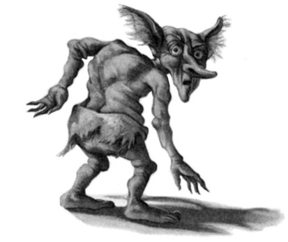
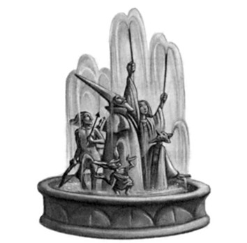
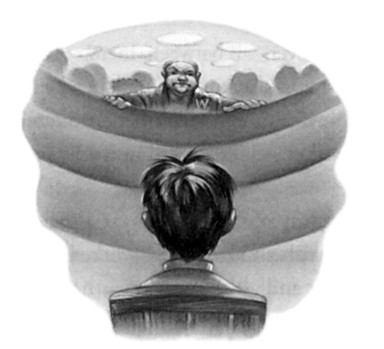
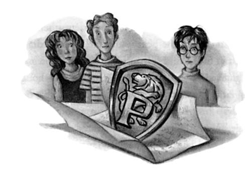
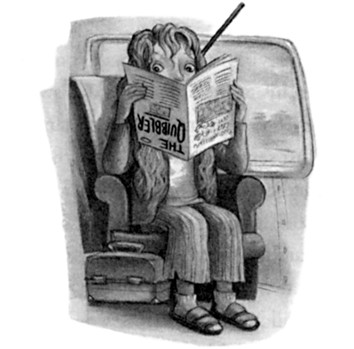

Soon a series of heavy knives were chopping meat and vegetables of their own accord, supervised by Mr. Weasley, while Mrs. Weasley stirred a cauldron dangling over the fire and the others took out plates, more goblets, and food from the pantry. Harry was left at the table with Sirius and Mundungus, who was still blinking mournfully at him.
“Seen old Figgy since?” he asked.
“No,” said Harry, “I haven’t seen anyone.”
“See, I wouldn’t ’ave left,” said Mundungus, leaning forward, a pleading note in his voice, “but I ’ad a business opportunity —”
Harry felt something brush against his knees and started, but it was only Crookshanks, Hermione’s bandy-legged ginger cat, who wound himself once around Harry’s legs, purring, then jumped onto Sirius’s lap and curled up. Sirius scratched him absentmindedly behind the ears as he turned, still grim-faced, to Harry.
“Had a good summer so far?”
“No, it’s been lousy,” said Harry.
For the first time, something like a grin flitted across Sirius’s face.
“Don’t know what you’re complaining about, myself.”
“What?” said Harry incredulously.
“Personally, I’d have welcomed a dementor attack. A deadly struggle for my soul would have broken the monotony nicely. You think you’ve had it bad, at least you’ve been able to get out and about, stretch your legs, get into a few fights. . . . I’ve been stuck inside for a month.”
“How come?” asked Harry, frowning.
“Because the Ministry of Magic’s still after me, and Voldemort will know al about me being an Animagus by now, Wormtail wil have told him, so my big disguise is useless. There’s not much I can do for the Order of the Phoenix . . . or so Dumbledore feels.”
82
THE ORDER OF
THE PHOENIX
There was something about the slightly flattened tone of voice in which Sirius uttered Dumbledore’s name that told Harry that Sirius was not very happy with the headmaster either. Harry felt a sudden upsurge of affection for his godfather.
“At least you’ve known what’s been going on,” he said bracingly.
“Oh yeah,” said Sirius sarcastically. “Listening to Snape’s reports, having to take all his snide hints that he’s out there risking his life while I’m sat on my backside here having a nice comfortable time . . .
asking me how the cleaning’s going —”
“What cleaning?” asked Harry.
“Trying to make this place fit for human habitation,” said Sirius, waving a hand around the dismal kitchen. “No one’s lived here for ten years, not since my dear mother died, unless you count her old house-elf, and he’s gone round the twist, hasn’t cleaned anything in ages —”
“Sirius?” said Mundungus, who did not appear to have paid any attention to this conversation, but had been minutely examining an empty goblet. “This solid silver, mate?”
“Yes,” said Sirius, surveying it with distaste. “Finest fifteenth-century goblin-wrought silver, embossed with the Black family crest.”
“That’d come off, though,” muttered Mundungus, polishing it with his cuff.
“Fred — George — NO, JUST CARRY THEM!” Mrs. Weasley shrieked.
Harry, Sirius, and Mundungus looked around and, a split second later, dived away from the table. Fred and George had bewitched a large cauldron of stew, an iron flagon of butterbeer, and a heavy wooden breadboard, complete with knife, to hurtle through the air toward them. The stew skidded the length of the table and came to a halt just before the end, leaving a long black burn on the wooden surface, the flagon of butterbeer fell with a crash, spilling its contents everywhere, and the bread knife slipped off the board and landed,
83
CHAPTER FIVE
point down and quivering ominously, exactly where Sirius’s right hand had been seconds before.
“FOR HEAVEN’S SAKE!” screamed Mrs. Weasley. “THERE
WAS NO NEED — I’VE HAD ENOUGH OF THIS — JUST BECAUSE YOU’RE ALLOWED TO USE MAGIC NOW YOU
DON’T HAVE TO WHIP YOUR WANDS OUT FOR EVERY
TINY LITTLE THING!”
“We were just trying to save a bit of time!” said Fred, hurrying forward and wrenching the bread knife out of the table. “Sorry Sirius, mate — didn’t mean to —”
Harry and Sirius were both laughing. Mundungus, who had toppled backward off his chair, was swearing as he got to his feet. Crookshanks had given an angry hiss and shot off under the dresser, from whence his large yellow eyes glowed in the darkness.
“Boys,” Mr. Weasley said, lifting the stew back into the middle of the table, “your mother’s right, you’re supposed to show a sense of responsibility now you’ve come of age —”
“— none of your brothers caused this sort of trouble!” Mrs.
Weasley raged at the twins, slamming a fresh flagon of butterbeer onto the table and spilling almost as much again. “Bill didn’t feel the need to Apparate every few feet! Charlie didn’t Charm everything he met!
Percy —”
She stopped dead, catching her breath with a frightened look at her husband, whose expression was suddenly wooden.
“Let’s eat,” said Bill quickly.
“It looks wonderful, Molly,” said Lupin, ladling stew onto a plate for her and handing it across the table.
For a few minutes there was silence but for the chink of plates and cutlery and the scraping of chairs as everyone settled down to their food. Then Mrs. Weasley turned to Sirius and said, “I’ve been meaning to tell you, there’s something trapped in that writing desk in the drawing room, it keeps rattling and shaking. Of course, it could just
84
THE ORDER OF
THE PHOENIX
be a boggart, but I thought we ought to ask Alastor to have a look at it before we let it out.”
“Whatever you like,” said Sirius indifferently.
“The curtains in there are full of doxies too,” Mrs. Weasley went on. “I thought we might try and tackle them tomorrow.”
“I look forward to it,” said Sirius. Harry heard the sarcasm in his voice, but he was not sure that anyone else did.
Opposite Harry, Tonks was entertaining Hermione and Ginny by transforming her nose between mouthfuls. Screwing up her eyes each time with the same pained expression she had worn back in Harry’s bedroom, her nose swelled to a beaklike protuberance like Snape’s, shrank to something resembling a button mushroom, and then sprouted a great deal of hair from each nostril. Apparently this was a regular mealtime entertainment, because after a while Hermione and Ginny started requesting their favorite noses.
“Do that one like a pig snout, Tonks . . .”
Tonks obliged, and Harry, looking up, had the fleeting impression that a female Dudley was grinning at him from across the table.
Mr. Weasley, Bill, and Lupin were having an intense discussion about goblins.
“They’re not giving anything away yet,” said Bill. “I still can’t work out whether they believe he’s back or not. ’Course, they might prefer not to take sides at all. Keep out of it.”
“I’m sure they’d never go over to You-Know-Who,” said Mr.
Weasley, shaking his head. “They’ve suffered losses too. Remember that goblin family he murdered last time, somewhere near Nottingham?”
“I think it depends what they’re offered,” said Lupin. “And I’m not talking about gold; if they’re offered freedoms we’ve been denying them for centuries they’re going to be tempted. Have you still not had any luck with Ragnok, Bill?”
“He’s feeling pretty anti-wizard at the moment,” said Bill. “He
85
CHAPTER FIVE
hasn’t stopped raging about the Bagman business, he reckons the Ministry did a cover-up, those goblins never got their gold from him, you know —”
A gale of laughter from the middle of the table drowned the rest of Bill’s words. Fred, George, Ron, and Mundungus were rolling around in their seats.
“. . . and then,” choked Mundungus, tears running down his face,
“and then, if you’ll believe it, ’e says to me, ’e says, ‘ ’ere, Dung, where didja get all them toads from? ’Cos some son of a Bludger’s gone and nicked all mine!’ And I says, ‘Nicked all your toads, Will, what next?
So you’ll be wanting some more, then?’ And if you’ll believe me, lads, the gormless gargoyle buys all ’is own toads back orf me for twice what
’e paid in the first place —”
“I don’t think we need to hear any more of your business dealings, thank you very much, Mundungus,” said Mrs. Weasley sharply, as Ron slumped forward onto the table, howling with laughter.
“Beg pardon, Molly,” said Mundungus at once, wiping his eyes and winking at Harry. “But, you know, Will nicked ’em orf Warty Harris in the first place so I wasn’t really doing nothing wrong —”
“I don’t know where you learned about right and wrong, Mundungus, but you seem to have missed a few crucial lessons,” said Mrs.
Weasley coldly.
Fred and George buried their faces in their goblets of butterbeer; George was hiccuping. For some reason, Mrs. Weasley threw a very nasty look at Sirius before getting to her feet and going to fetch a large rhubarb crumble for pudding. Harry looked round at his godfather.
“Molly doesn’t approve of Mundungus,” said Sirius in an undertone.
“How come he’s in the Order?” Harry said very quietly.
“He’s useful,” Sirius muttered. “Knows all the crooks — well, he would, seeing as he’s one himself. But he’s also very loyal to Dumble-
86
THE ORDER OF
THE PHOENIX
dore, who helped him out of a tight spot once. It pays to have someone like Dung around, he hears things we don’t. But Molly thinks inviting him to stay for dinner is going too far. She hasn’t forgiven him for slipping off duty when he was supposed to be tailing you.”
Three helpings of rhubarb crumble and custard later and the waist-band on Harry’s jeans was feeling uncomfortably tight (which was saying something, as the jeans had once been Dudley’s). He lay down his spoon in a lull in the general conversation. Mr. Weasley was leaning back in his chair, looking replete and relaxed, Tonks was yawning widely, her nose now back to normal, and Ginny, who had lured Crookshanks out from under the dresser, was sitting cross-legged on the floor, rolling butterbeer corks for him to chase.
“Nearly time for bed, I think,” said Mrs. Weasley on a yawn.
“Not just yet, Mol y,” said Sirius, pushing away his empty plate and turning to look at Harry. “You know, I’m surprised at you. I thought the first thing you’d do when you got here would be to start asking questions about Voldemort.”
The atmosphere in the room changed with the rapidity Harry associated with the arrival of dementors. Where seconds before it had been sleepily relaxed, it was now alert, even tense. A frisson had gone around the table at the mention of Voldemort’s name. Lupin, who had been about to take a sip of wine, lowered his goblet slowly, looking wary.
“I did!” said Harry indignantly. “I asked Ron and Hermione but they said we’re not allowed in the Order, so —”
“And they’re quite right,” said Mrs. Weasley. “You’re too young.”
She was sitting bolt upright in her chair, her fists clenched upon its arms, every trace of drowsiness gone.
“Since when did someone have to be in the Order of the Phoenix to ask questions?” asked Sirius. “Harry’s been trapped in that Muggle house for a month. He’s got the right to know what’s been happen —”
87
CHAPTER FIVE
“Hang on!” interrupted George loudly.
“How come Harry gets his questions answered?” said Fred angrily.
“We’ve been trying to get stuff out of you for a month and you haven’t told us a single stinking thing!” said George.
“ ‘ You’re too young, you’re not in the Order, ’ ” said Fred, in a high-pitched voice that sounded uncannily like his mother’s. “Harry’s not even of age!”
“It’s not my fault you haven’t been told what the Order’s doing,”
said Sirius calmly. “That’s your parents’ decision. Harry, on the other hand —”
“It’s not down to you to decide what’s good for Harry!” said Mrs.
Weasley sharply. Her normally kindly face looked dangerous. “You haven’t forgotten what Dumbledore said, I suppose?”
“Which bit?” Sirius asked politely, but with an air as though readying himself for a fight.
“The bit about not telling Harry more than he needs to know, ” said Mrs. Weasley, placing a heavy emphasis on the last three words.
Ron, Hermione, Fred, and George’s heads turned from Sirius to Mrs. Weasley as though following a tennis rally. Ginny was kneeling amid a pile of abandoned butterbeer corks, watching the conversation with her mouth slightly open. Lupin’s eyes were fixed on Sirius.
“I don’t intend to tell him more than he needs to know, Molly,” said Sirius. “But as he was the one who saw Voldemort come back” (again, there was a collective shudder around the table at the name), “he has more right than most to —”
“He’s not a member of the Order of the Phoenix!” said Mrs.
Weasley. “He’s only fifteen and —”
“— and he’s dealt with as much as most in the Order,” said Sirius,
“and more than some —”
“No one’s denying what he’s done!” said Mrs. Weasley, her voice rising, her fists trembling on the arms of her chair. “But he’s still —”
“He’s not a child!” said Sirius impatiently.
88
THE ORDER OF
THE PHOENIX
“He’s not an adult either!” said Mrs. Weasley, the color rising in her cheeks. “He’s not James, Sirius!”
“I’m perfectly clear who he is, thanks, Molly,” said Sirius coldly.
“I’m not sure you are!” said Mrs. Weasley. “Sometimes, the way you talk about him, it’s as though you think you’ve got your best friend back!”
“What’s wrong with that?” said Harry.
“What’s wrong, Harry, is that you are not your father, however much you might look like him!” said Mrs. Weasley, her eyes still boring into Sirius. “You are still at school and adults responsible for you should not forget it!”
“Meaning I’m an irresponsible godfather?” demanded Sirius, his voice rising.
“Meaning you’ve been known to act rashly, Sirius, which is why Dumbledore keeps reminding you to stay at home and —”
“We’ll leave my instructions from Dumbledore out of this, if you please!” said Sirius loudly.
“Arthur!” said Mrs. Weasley, rounding on her husband. “Arthur, back me up!”
Mr. Weasley did not speak at once. He took off his glasses and cleaned them slowly on his robes, not looking at his wife. Only when he had replaced them carefully on his nose did he say, “Dumbledore knows the position has changed, Molly. He accepts that Harry will have to be filled in to a certain extent now that he is staying at headquarters —”
“Yes, but there’s a difference between that and inviting him to ask whatever he likes!”
“Personally,” said Lupin quietly, looking away from Sirius at last, as Mrs. Weasley turned quickly to him, hopeful that finally she was about to get an ally, “I think it better that Harry gets the facts — not all the facts, Molly, but the general picture — from us, rather than a garbled version from . . . others.”
89
CHAPTER FIVE
His expression was mild, but Harry felt sure that Lupin, at least, knew that some Extendable Ears had survived Mrs. Weasley’s purge.
“Well,” said Mrs. Weasley, breathing deeply and looking around the table for support that did not come, “well . . . I can see I’m going to be overruled. I’l just say this: Dumbledore must have had his reasons for not wanting Harry to know too much, and speaking as someone who has got Harry’s best interests at heart —”
“He’s not your son,” said Sirius quietly.
“He’s as good as,” said Mrs. Weasley fiercely. “Who else has he got?”
“He’s got me!”
“Yes,” said Mrs. Weasley, her lip curling. “The thing is, it’s been rather difficult for you to look after him while you’ve been locked up in Azkaban, hasn’t it?”
Sirius started to rise from his chair.
“Molly, you’re not the only person at this table who cares about Harry,” said Lupin sharply. “Sirius, sit down. ”
Mrs. Weasley’s lower lip was trembling. Sirius sank slowly back into his chair, his face white.
“I think Harry ought to be allowed a say in this,” Lupin continued.
“He’s old enough to decide for himself.”
“I want to know what’s been going on,” Harry said at once.
He did not look at Mrs. Weasley. He had been touched by what she had said about his being as good as a son, but he was also impatient at her mollycoddling. . . . Sirius was right, he was not a child.
“Very well,” said Mrs. Weasley, her voice cracking. “Ginny —
Ron — Hermione — Fred — George — I want you out of this kitchen, now.”
There was instant uproar.
“We’re of age!” Fred and George bellowed together.
“If Harry’s allowed, why can’t I?” shouted Ron.
“Mum, I want to!” wailed Ginny.
90
THE ORDER OF
THE PHOENIX
“NO!” shouted Mrs. Weasley, standing up, her eyes overbright. “I absolutely forbid —”
“Molly, you can’t stop Fred and George,” said Mr. Weasley wearily.
“They are of age —”
“They’re still at school —”
“But they’re legally adults now,” said Mr. Weasley in the same tired voice.
Mrs. Weasley was now scarlet in the face.
“I — oh, all right then, Fred and George can stay, but Ron —”
“Harry’ll tell me and Hermione everything you say anyway!” said Ron hotly. “Won’t — won’t you?” he added uncertainly, meeting Harry’s eyes.
For a split second, Harry considered telling Ron that he wouldn’t tell him a single word, that he could try a taste of being kept in the dark and see how he liked it. But the nasty impulse vanished as they looked at each other.
“ ’Course I will,” Harry said. Ron and Hermione beamed.
“Fine!” shouted Mrs. Weasley. “Fine! Ginny — BED!”
Ginny did not go quietly. They could hear her raging and storming at her mother all the way up the stairs, and when she reached the hall Mrs. Black’s earsplitting shrieks were added to the din. Lupin hurried off to the portrait to restore calm. It was only after he had returned, closing the kitchen door behind him and taking his seat at the table again, that Sirius spoke.
“Okay, Harry . . . what do you want to know?”
Harry took a deep breath and asked the question that had been obsessing him for a month.
“Where’s Voldemort? What’s he doing? I’ve been trying to watch the Muggle news,” he said, ignoring the renewed shudders and winces at the name, “and there hasn’t been anything that looks like him yet, no funny deaths or anything —”
91
CHAPTER FIVE
“That’s because there haven’t been any suspicious deaths yet,” said Sirius, “not as far as we know, anyway. . . . And we know quite a lot.”
“More than he thinks we do anyway,” said Lupin.
“How come he’s stopped killing people?” Harry asked. He knew that Voldemort had murdered more than once in the last year alone.
“Because he doesn’t want to draw attention to himself at the moment,” said Sirius. “It would be dangerous for him. His comeback didn’t come off quite the way he wanted it to, you see. He messed it up.”
“Or rather, you messed it up for him,” said Lupin with a satisfied smile.
“How?” Harry asked perplexedly.
“You weren’t supposed to survive!” said Sirius. “Nobody apart from his Death Eaters was supposed to know he’d come back. But you survived to bear witness.”
“And the very last person he wanted alerted to his return the moment he got back was Dumbledore,” said Lupin. “And you made sure Dumbledore knew at once.”
“How has that helped?” Harry asked.
“Are you kidding?” said Bill incredulously. “Dumbledore was the only one You-Know-Who was ever scared of!”
“Thanks to you, Dumbledore was able to recall the Order of the Phoenix about an hour after Voldemort returned,” said Sirius.
“So what’s the Order been doing?” said Harry, looking around at them all.
“Working as hard as we can to make sure Voldemort can’t carry out his plans,” said Sirius.
“How d’you know what his plans are?” Harry asked quickly.
“Dumbledore’s got a shrewd idea,” said Lupin, “and Dumbledore’s shrewd ideas normally turn out to be accurate.”
“So what does Dumbledore reckon he’s planning?”
“Well, firstly, he wants to build up his army again,” said Sirius. “In
92
THE ORDER OF
THE PHOENIX
the old days he had huge numbers at his command; witches and wizards he’d bullied or bewitched into following him, his faithful Death Eaters, a great variety of Dark creatures. You heard him planning to recruit the giants; well, they’ll be just one group he’s after. He’s certainly not going to try and take on the Ministry of Magic with only a dozen Death Eaters.”
“So you’re trying to stop him getting more followers?”
“We’re doing our best,” said Lupin.
“How?”
“Well, the main thing is to try and convince as many people as possible that You-Know-Who really has returned, to put them on their guard,” said Bill. “It’s proving tricky, though.”
“Why?”
“Because of the Ministry’s attitude,” said Tonks. “You saw Cornelius Fudge after You-Know-Who came back, Harry. Well, he hasn’t shifted his position at all. He’s absolutely refusing to believe it’s happened.”
“But why?” said Harry desperately. “Why’s he being so stupid? If Dumbledore —”
“Ah, well, you’ve put your finger on the problem,” said Mr. Weasley with a wry smile. “Dumbledore. ”
“Fudge is frightened of him, you see,” said Tonks sadly.
“Frightened of Dumbledore?” said Harry incredulously.
“Frightened of what he’s up to,” said Mr. Weasley. “You see, Fudge thinks Dumbledore’s plotting to overthrow him. He thinks Dumbledore wants to be Minister of Magic.”
“But Dumbledore doesn’t want —”
“Of course he doesn’t,” said Mr. Weasley. “He’s never wanted the Minister’s job, even though a lot of people wanted him to take it when Millicent Bagnold retired. Fudge came to power instead, but he’s never quite forgotten how much popular support Dumbledore had, even though Dumbledore never applied for the job.”
93
CHAPTER FIVE
“Deep down, Fudge knows Dumbledore’s much cleverer than he is, a much more powerful wizard, and in the early days of his Ministry he was forever asking Dumbledore for help and advice,” said Lupin. “But it seems that he’s become fond of power now, and much more confident. He loves being Minister of Magic, and he’s managed to convince himself that he’s the clever one and Dumbledore’s simply stirring up trouble for the sake of it.”
“How can he think that?” said Harry angrily. “How can he think Dumbledore would just make it all up — that I’d make it all up?”
“Because accepting that Voldemort’s back would mean trouble like the Ministry hasn’t had to cope with for nearly fourteen years,” said Sirius bitterly. “Fudge just can’t bring himself to face it. It’s so much more comfortable to convince himself Dumbledore’s lying to destabilize him.”
“You see the problem,” said Lupin. “While the Ministry insists there is nothing to fear from Voldemort, it’s hard to convince people he’s back, especially as they really don’t want to believe it in the first place. What’s more, the Ministry’s leaning heavily on the Daily Prophet not to report any of what they’re calling Dumbledore’s rumor-mongering, so most of the Wizarding community are completely unaware anything’s happened, and that makes them easy targets for the Death Eaters if they’re using the Imperius Curse.”
“But you’re telling people, aren’t you?” said Harry, looking around at Mr. Weasley, Sirius, Bill, Mundungus, Lupin, and Tonks. “You’re letting people know he’s back?”
They all smiled humorlessly.
“Well, as everyone thinks I’m a mad mass murderer and the Ministry’s put a ten-thousand-Galleon price on my head, I can hardly stroll up the street and start handing out leaflets, can I?” said Sirius restlessly.
“And I’m not a very popular dinner guest with most of the community,” said Lupin. “It’s an occupational hazard of being a werewolf.”
94
THE ORDER OF
THE PHOENIX
“Tonks and Arthur would lose their jobs at the Ministry if they started shooting their mouths off,” said Sirius, “and it’s very important for us to have spies inside the Ministry, because you can bet Voldemort will have them.”
“We’ve managed to convince a couple of people, though,” said Mr.
Weasley. “Tonks here, for one — she’s too young to have been in the Order of the Phoenix last time, and having Aurors on our side is a huge advantage — Kingsley Shacklebolt’s been a real asset too. He’s in charge of the hunt for Sirius, so he’s been feeding the Ministry information that Sirius is in Tibet.”
“But if none of you’s putting the news out that Voldemort’s back —” Harry began.
“Who said none of us was putting the news out?” said Sirius. “Why d’you think Dumbledore’s in such trouble?”
“What d’you mean?” Harry asked.
“They’re trying to discredit him,” said Lupin. “Didn’t you see the Daily Prophet last week? They reported that he’d been voted out of the Chairmanship of the International Confederation of Wizards because he’s getting old and losing his grip, but it’s not true, he was voted out by Ministry wizards after he made a speech announcing Voldemort’s return. They’ve demoted him from Chief Warlock on the Wizengamot — that’s the Wizard High Court — and they’re talking about taking away his Order of Merlin, First Class, too.”
“But Dumbledore says he doesn’t care what they do as long as they don’t take him off the Chocolate Frog cards,” said Bill, grinning.
“It’s no laughing matter,” said Mr. Weasley shortly. “If he carries on defying the Ministry like this, he could end up in Azkaban and the last thing we want is Dumbledore locked up. While You-Know-Who knows Dumbledore’s out there and wise to what he’s up to, he’s going to go cautiously for a while. If Dumbledore’s out of the way — well, You-Know-Who will have a clear field.”
95
CHAPTER FIVE
“But if Voldemort’s trying to recruit more Death Eaters, it’s bound to get out that he’s come back, isn’t it?” asked Harry desperately.
“Voldemort doesn’t march up to people’s houses and bang on their front doors, Harry,” said Sirius. “He tricks, jinxes, and blackmails them. He’s well-practiced at operating in secrecy. In any case, gathering followers is only one thing he’s interested in, he’s got other plans too, plans he can put into operation very quietly indeed, and he’s concentrating on them at the moment.”
“What’s he after apart from followers?” Harry asked swiftly.
He thought he saw Sirius and Lupin exchange the most fleeting of looks before Sirius said, “Stuff he can only get by stealth.”
When Harry continued to look puzzled, Sirius said, “Like a weapon. Something he didn’t have last time.”
“When he was powerful before?”
“Yes.”
“Like what kind of weapon?” said Harry. “Something worse than the Avada Kedavra — ?”
“That’s enough.”
Mrs. Weasley spoke from the shadows beside the door. Harry had not noticed her return from taking Ginny upstairs. Her arms were crossed and she looked furious.
“I want you in bed, now. Al of you,” she added, looking around at Fred, George, Ron, and Hermione.
“You can’t boss us —” Fred began.
“Watch me,” snarled Mrs. Weasley. She was trembling slightly as she looked at Sirius. “You’ve given Harry plenty of information. Any more and you might just as well induct him into the Order straightaway.”
“Why not?” said Harry quickly. “I’ll join, I want to join, I want to fight —”
“No.”
It was not Mrs. Weasley who spoke this time, but Lupin.
96
THE ORDER OF
THE PHOENIX
“The Order is comprised only of overage wizards,” he said. “Wizards who have left school,” he added, as Fred and George opened their mouths. “There are dangers involved of which you can have no idea, any of you . . . I think Molly’s right, Sirius. We’ve said enough.”
Sirius half-shrugged but did not argue. Mrs. Weasley beckoned imperiously to her sons and Hermione. One by one they stood up and Harry, recognizing defeat, followed suit.
97

C H A P T E R S I X
THE NOBLE AND MOST
ANCIENT HOUSE OF BLACK
rs. Weasley followed them upstairs looking grim.
M “I want you all to go straight to bed, no talking,” she said as they reached the first landing. “We’ve got a busy day tomorrow.
I expect Ginny’s asleep,” she added to Hermione, “so try not to wake her up.”
“Asleep, yeah, right,” said Fred in an undertone, after Hermione bade them good night and they were climbing to the next floor. “If Ginny’s not lying awake waiting for Hermione to tell her everything they said downstairs, then I’m a flobberworm. . . .”
“All right, Ron, Harry,” said Mrs. Weasley on the second landing, pointing them into their bedroom. “Off to bed with you.”
“ ’Night,” Harry and Ron said to the twins.
“Sleep tight,” said Fred, winking.
Mrs. Weasley closed the door behind Harry with a sharp snap. The bedroom looked, if anything, even danker and gloomier than it had on first sight. The blank picture on the wall was now breathing very slowly and deeply, as though its invisible occupant was asleep. Harry put on his pajamas, took off his glasses, and climbed into his chilly
98
THE NOBLE AND MOST
ANCIENT HOUSE OF BLACK
bed while Ron threw Owl Treats up on top of the wardrobe to pacify Hedwig and Pigwidgeon, who were clattering around and rustling their wings restlessly.
“We can’t let them out to hunt every night,” Ron explained as he pulled on his maroon pajamas. “Dumbledore doesn’t want too many owls swooping around the square, thinks it’ll look suspicious. Oh yeah . . . I forgot. . . .”
He crossed to the door and bolted it.
“What’re you doing that for?”
“Kreacher,” said Ron as he turned off the light. “First night I was here he came wandering in at three in the morning. Trust me, you don’t want to wake up and find him prowling around your room.
Anyway . . .” He got into his bed, settled down under the covers, then turned to look at Harry in the darkness. Harry could see his outline by the moonlight filtering in through the grimy window. “What d’you reckon?”
Harry didn’t need to ask what Ron meant.
“Well, they didn’t tell us much we couldn’t have guessed, did they?”
he said, thinking of all that had been said downstairs. “I mean, all they’ve real y said is that the Order’s trying to stop people joining Vol —”
There was a sharp intake of breath from Ron.
“— demort, ” said Harry firmly. “When are you going to start using his name? Sirius and Lupin do.”
Ron ignored this last comment. “Yeah, you’re right,” he said. “We already knew nearly everything they told us, from using the Extendable Ears. The only new bit was —”
Crack.
“OUCH!”
“Keep your voice down, Ron, or Mum’ll be back up here.”
“You two just Apparated on my knees!”
“Yeah, well, it’s harder in the dark —”
99
CHAPTER SIX
Harry saw the blurred outlines of Fred and George leaping down from Ron’s bed. There was a groan of bedsprings and Harry’s mattress descended a few inches as George sat down near his feet.
“So, got there yet?” said George eagerly.
“The weapon Sirius mentioned?” said Harry.
“Let slip, more like,” said Fred with relish, now sitting next to Ron.
“We didn’t hear about that on the old Extendables, did we?”
“What d’you reckon it is?” said Harry.
“Could be anything,” said Fred.
“But there can’t be anything worse than the Avada Kedavra curse, can there?” said Ron. “What’s worse than death?”
“Maybe it’s something that can kill loads of people at once,” suggested George.
“Maybe it’s some particularly painful way of killing people,” said Ron fearfully.
“He’s got the Cruciatus Curse for causing pain,” said Harry. “He doesn’t need anything more efficient than that.”
There was a pause and Harry knew that the others, like him, were wondering what horrors this weapon could perpetrate.
“So who d’you thinks got it now?” asked George.
“I hope it’s our side,” said Ron, sounding slightly nervous.
“If it is, Dumbledore’s probably keeping it,” said Fred.
“Where?” said Ron quickly. “Hogwarts?”
“Bet it is!” said George. “That’s where he hid the Sorcerer’s Stone!”
“A weapon’s going to be a lot bigger than the Stone, though!” said Ron.
“Not necessarily,” said Fred.
“Yeah, size is no guarantee of power,” said George. “Look at Ginny.”
“What d’you mean?” said Harry.
“You’ve never been on the receiving end of one of her Bat-Bogey Hexes, have you?”
100
THE NOBLE AND MOST
ANCIENT HOUSE OF BLACK
“Shhh!” said Fred, half-rising from the bed. “Listen!”
They fell silent. Footsteps were coming up the stairs again.
“Mum,” said George, and without further ado there was a loud crack and Harry felt the weight vanish from the end of his bed. A few seconds later and they heard the floorboard creak outside their door; Mrs. Weasley was plainly listening to see whether they were talking or not.
Hedwig and Pigwidgeon hooted dolefully. The floorboard creaked again and they heard her heading upstairs to check on Fred and George.
“She doesn’t trust us at all, you know,” said Ron regretfully.
Harry was sure he would not be able to fall asleep; the evening had been so packed with things to think about that he fully expected to lie awake for hours mulling it all over. He wanted to continue talking to Ron, but Mrs. Weasley was now creaking back downstairs again, and once she had gone he distinctly heard others making their way upstairs. . . . In fact, many-legged creatures were cantering softly up and down outside the bedroom door, and Hagrid, the Care of Magical Creatures teacher, was saying, “Beauties, aren’ they, eh, Harry? We’ll be studyin’ weapons this term. . . .” And Harry saw that the creatures had cannons for heads and were wheeling to face him. . . . He ducked. . . .
The next thing he knew, he was curled in a warm ball under his bedclothes, and George’s loud voice was filling the room.
“Mum says get up, your breakfast is in the kitchen and then she needs you in the drawing room, there are loads more doxies than she thought and she’s found a nest of dead puffskeins under the sofa.”
Half an hour later, Harry and Ron, who had dressed and breakfasted quickly, entered the drawing room, a long, high-ceilinged room on the first floor with olive-green walls covered in dirty tapestries. The carpet exhaled little clouds of dust every time someone put their foot on it and the long, moss-green velvet curtains were buzzing as though swarming with invisible bees. It was around these that Mrs. Weasley,
101
CHAPTER SIX
Hermione, Ginny, Fred, and George were grouped, all looking rather peculiar, as they had tied cloths over their noses and mouths. Each of them was also holding a large bottle of black liquid with a nozzle at the end.
“Cover your faces and take a spray,” Mrs. Weasley said to Harry and Ron the moment she saw them, pointing to two more bottles of black liquid standing on a spindle-legged table. “It’s Doxycide. I’ve never seen an infestation this bad — what that house-elf’s been doing for the last ten years —”
Hermione’s face was half concealed by a tea towel but Harry distinctly saw her throw a reproachful look at Mrs. Weasley at these words.
“Kreacher’s really old, he probably couldn’t manage —”
“You’d be surprised what Kreacher can manage when he wants to, Hermione,” said Sirius, who had just entered the room carrying a bloodstained bag of what appeared to be dead rats. “I’ve just been feeding Buckbeak,” he added, in reply to Harry’s inquiring look. “I keep him upstairs in my mother’s bedroom. Anyway . . . this writing desk . . .”
He dropped the bag of rats onto an armchair, then bent over to examine the locked cabinet which, Harry now noticed for the first time, was shaking slightly.
“Well, Molly, I’m pretty sure this is a boggart,” said Sirius, peering through the keyhole, “but perhaps we ought to let Mad-Eye have a shifty at it before we let it out — knowing my mother it could be something much worse.”
“Right you are, Sirius,” said Mrs. Weasley.
They were both speaking in carefully light, polite voices that told Harry quite plainly that neither had forgotten their disagreement of the night before.
A loud, clanging bell sounded from downstairs, followed at once by the cacophony of screams and wails that had been triggered the previous night by Tonks knocking over the umbrella stand.
102
THE NOBLE AND MOST
ANCIENT HOUSE OF BLACK
“I keep telling them not to ring the doorbell!” said Sirius exasperatedly, hurrying back out of the room. They heard him thundering down the stairs as Mrs. Black’s screeches echoed up through the house once more: “Stains of dishonor, filthy half-breeds, blood traitors, children of filth . . .”
“Close the door, please, Harry,” said Mrs. Weasley.
Harry took as much time as he dared to close the drawing room door; he wanted to listen to what was going on downstairs. Sirius had obviously managed to shut the curtains over his mother’s portrait because she had stopped screaming. He heard Sirius walking down the hall, then the clattering of the chain on the front door, and then a deep voice he recognized as Kingsley Shacklebolt’s saying, “Hestia’s just relieved me, so she’s got Moody’s cloak now, thought I’d leave a report for Dumbledore. . . .”
Feeling Mrs. Weasley’s eyes on the back of his head, Harry regretfully closed the drawing room door and rejoined the doxy party.
Mrs. Weasley was bending over to check the page on doxies in Gilderoy Lockhart’s Guide to Household Pests, which was lying open on the sofa.
“Right, you lot, you need to be careful, because doxies bite and their teeth are poisonous. I’ve got a bottle of antidote here, but I’d rather nobody needed it.”
She straightened up, positioned herself squarely in front of the curtains, and beckoned them all forward.
“When I say the word, start spraying immediately,” she said.
“They’ll come flying out at us, I expect, but it says on the sprays one good squirt will paralyze them. When they’re immobilized, just throw them in this bucket.”
She stepped carefully out of their line of fire and raised her own spray. “All right — squirt!”
Harry had been spraying only a few seconds when a fully grown doxy came soaring out of a fold in the material, shiny beetlelike wings
103
CHAPTER SIX
whirring, tiny needle-sharp teeth bared, its fairylike body covered with thick black hair and its four tiny fists clenched with fury. Harry caught it full in the face with a blast of Doxycide; it froze in midair and fell, with a surprisingly loud thunk, onto the worn carpet below.
Harry picked it up and threw it in the bucket.
“Fred, what are you doing?” said Mrs. Weasley sharply. “Spray that at once and throw it away!”
Harry looked around. Fred was holding a struggling doxy between his forefinger and thumb.
“Right-o,” Fred said brightly, spraying the doxy quickly in the face so that it fainted, but the moment Mrs. Weasley’s back was turned he pocketed it with a wink.
“We want to experiment with doxy venom for our Skiving Snackboxes,” George told Harry under his breath.
Deftly spraying two doxies at once as they soared straight for his nose, Harry moved closer to George and muttered out of the corner of his mouth, “What are Skiving Snackboxes?”
“Range of sweets to make you ill,” George whispered, keeping a wary eye on Mrs. Weasley’s back. “Not seriously ill, mind, just ill enough to get you out of a class when you feel like it. Fred and I have been developing them this summer. They’re double-ended, color-coded chews. If you eat the orange half of the Puking Pastilles, you throw up. Moment you’ve been rushed out of the lesson for the hospital wing, you swallow the purple half —”
“ ‘— which restores you to full fitness, enabling you to pursue the leisure activity of your own choice during an hour that would otherwise have been devoted to unprofitable boredom.’ That’s what we’re putting in the adverts, anyway,” whispered Fred, who had edged over out of Mrs. Weasley’s line of vision and was now sweeping a few stray doxies from the floor and adding them to his pocket. “But they still need a bit of work. At the moment our testers are having a bit of trouble stopping puking long enough to swallow the purple end.”
104
THE NOBLE AND MOST
ANCIENT HOUSE OF BLACK
“Testers?”
“Us,” said Fred. “We take it in turns. George did the Fainting Fancies — we both tried the Nosebleed Nougat —”
“Mum thought we’d been dueling,” said George.
“Joke shop still on, then?” Harry muttered, pretending to be adjusting the nozzle on his spray.
“Well, we haven’t had a chance to get premises yet,” said Fred, dropping his voice even lower as Mrs. Weasley mopped her brow with her scarf before returning to the attack, “so we’re running it as a mail-order service at the moment. We put advertisements in the Daily Prophet last week.”
“All thanks to you, mate,” said George. “But don’t worry . . . Mum hasn’t got a clue. She won’t read the Daily Prophet anymore, ’cause of it telling lies about you and Dumbledore.”
Harry grinned. He had forced the Weasley twins to take the thousand-Galleon prize money he had won in the Triwizard Tournament to help them realize their ambition to open a joke shop, but he was still glad to know that his part in furthering their plans was unknown to Mrs. Weasley, who did not think that running a joke shop was a suitable career for two of her sons.
The de-doxying of the curtains took most of the morning. It was past midday when Mrs. Weasley finally removed her protective scarf, sank into a sagging armchair, and sprang up again with a cry of disgust, having sat on the bag of dead rats. The curtains were no longer buzzing; they hung limp and damp from the intensive spraying; unconscious doxies lay crammed in the bucket at the foot of them beside a bowl of their black eggs, at which Crookshanks was now sniffing and Fred and George were shooting covetous looks.
“I think we’ll tackle those after lunch.”
Mrs. Weasley pointed at the dusty glass-fronted cabinets standing on either side of the mantelpiece. They were crammed with an odd assortment of objects: a selection of rusty daggers, claws, a coiled
105
CHAPTER SIX
snakeskin, a number of tarnished silver boxes inscribed with languages Harry could not understand and, least pleasant of all, an ornate crystal bottle with a large opal set into the stopper, full of what Harry was quite sure was blood.
The clanging doorbell rang again. Everyone looked at Mrs. Weasley.
“Stay here,” she said firmly, snatching up the bag of rats as Mrs.
Blacks screeches started up again from down below. “I’ll bring up some sandwiches.”
She left the room, closing the door carefully behind her. At once, everyone dashed over to the window to look down onto the doorstep.
They could see the top of an unkempt gingery head and a stack of precariously balanced cauldrons.
“Mundungus!” said Hermione. “What’s he brought all those cauldrons for?”
“Probably looking for a safe place to keep them,” said Harry. “Isn’t that what he was doing the night he was supposed to be tailing me?
Picking up dodgy cauldrons?”
“Yeah, you’re right!” said Fred, as the front door opened; Mundungus heaved his cauldrons through it and disappeared from view.
“Blimey, Mum won’t like that. . . .”
He and George crossed to the door and stood beside it, listening intently. Mrs. Black’s screaming had stopped again.
“Mundungus is talking to Sirius and Kingsley,” Fred muttered, frowning with concentration. “Can’t hear properly . . . d’you reckon we can risk the Extendable Ears?”
“Might be worth it,” said George. “I could sneak upstairs and get a pair —”
But at that precise moment there was an explosion of sound from downstairs that rendered Extendable Ears quite unnecessary. All of them could hear exactly what Mrs. Weasley was shouting at the top of her voice.
106
THE NOBLE AND MOST
ANCIENT HOUSE OF BLACK
“WE ARE NOT RUNNING A HIDEOUT FOR STOLEN
GOODS!”
“I love hearing Mum shouting at someone else,” said Fred, with a satisfied smile on his face as he opened the door an inch or so to allow Mrs. Weasley’s voice to permeate the room better. “It makes such a nice change.”
“— COMPLETELY IRRESPONSIBLE, AS IF WE HAVEN’T
GOT ENOUGH TO WORRY ABOUT WITHOUT YOU DRAG-
GING STOLEN CAULDRONS INTO THE HOUSE —”
“The idiots are letting her get into her stride,” said George, shaking his head. “You’ve got to head her off early, otherwise she builds up a head of steam and goes on for hours. And she’s been dying to have a go at Mundungus ever since he sneaked off when he was supposed to be following you, Harry — and there goes Sirius’s mum again —”
Mrs. Weasley’s voice was lost amid fresh shrieks and screams from the portraits in the hall. George made to shut the door to drown the noise, but before he could do so, a house-elf edged into the room.
Except for the filthy rag tied like a loincloth around its middle, it was completely naked. It looked very old. Its skin seemed to be several times too big for it and though it was bald like all house-elves, there was a quantity of white hair growing out of its large, batlike ears. Its eyes were a bloodshot and watery gray, and its fleshy nose was large and rather snoutlike.
The elf took absolutely no notice of Harry and the rest. Acting as though it could not see them, it shuffled hunchbacked, slowly and doggedly, toward the far end of the room, muttering under its breath all the while in a hoarse, deep voice like a bullfrog’s, “. . . Smells like a drain and a criminal to boot, but she’s no better, nasty old blood traitor with her brats messing up my Mistress’s house, oh my poor Mistress, if she knew, if she knew the scum they’ve let in her house, what would she say to old Kreacher, oh the shame of it, Mudbloods
107
CHAPTER SIX
and werewolves and traitors and thieves, poor old Kreacher, what can he do. . . .”
“Hello, Kreacher,” said Fred very loudly, closing the door with a snap.
The house-elf froze in his tracks, stopped muttering, and then gave a very pronounced and very unconvincing start of surprise.
“Kreacher did not see Young Master,” he said, turning around and bowing to Fred. Still facing the carpet, he added, perfectly audibly,
“Nasty little brat of a blood traitor it is.”
“Sorry?” said George. “Didn’t catch that last bit.”
“Kreacher said nothing,” said the elf, with a second bow to George, adding in a clear undertone, “and there’s its twin, unnatural little beasts they are.”
Harry didn’t know whether to laugh or not. The elf straightened up, eyeing them all very malevolently, and apparently convinced that they could not hear him as he continued to mutter.
“. . . and there’s the Mudblood, standing there bold as brass, oh if my Mistress knew, oh how she’d cry, and there’s a new boy, Kreacher doesn’t know his name, what is he doing here, Kreacher doesn’t know . . .”
“This is Harry, Kreacher,” said Hermione tentatively. “Harry Potter.”
Kreacher’s pale eyes widened and he muttered faster and more furiously than ever.
“The Mudblood is talking to Kreacher as though she is my friend, if Kreacher’s Mistress saw him in such company, oh what would she say —”
“Don’t call her a Mudblood!” said Ron and Ginny together, very angrily.
“It doesn’t matter,” Hermione whispered, “he’s not in his right mind, he doesn’t know what he’s —”
108
THE NOBLE AND MOST
ANCIENT HOUSE OF BLACK
“Don’t kid yourself, Hermione, he knows exactly what he’s saying,”
said Fred, eyeing Kreacher with great dislike.
Kreacher was still muttering, his eyes on Harry.
“Is it true? Is it Harry Potter? Kreacher can see the scar, it must be true, that’s that boy who stopped the Dark Lord, Kreacher wonders how he did it —”
“Don’t we all, Kreacher?” said Fred.
“What do you want anyway?” George asked.
Kreacher’s huge eyes darted onto George.
“Kreacher is cleaning,” he said evasively.
“A likely story,” said a voice behind Harry.
Sirius had come back; he was glowering at the elf from the doorway. The noise in the hall had abated; perhaps Mrs. Weasley and Mundungus had moved their argument down into the kitchen. At the sight of Sirius, Kreacher flung himself into a ridiculously low bow that flattened his snoutlike nose on the floor.
“Stand up straight,” said Sirius impatiently. “Now, what are you up to?”
“Kreacher is cleaning,” the elf repeated. “Kreacher lives to serve the noble house of Black —”
“— and it’s getting blacker every day, it’s filthy,” said Sirius.
“Master always liked his little joke,” said Kreacher, bowing again, and continuing in an undertone, “Master was a nasty ungrateful swine who broke his mother’s heart —”
“My mother didn’t have a heart, Kreacher,” Sirius snapped. “She kept herself alive out of pure spite.”
Kreacher bowed again and said, “Whatever Master says,” then muttered furiously, “Master is not fit to wipe slime from his mother’s boots, oh my poor Mistress, what would she say if she saw Kreacher serving him, how she hated him, what a disappointment he was —”
“I asked you what you were up to,” said Sirius coldly. “Every time
109
CHAPTER SIX
you show up pretending to be cleaning, you sneak something off to your room so we can’t throw it out.”
“Kreacher would never move anything from its proper place in Master’s house,” said the elf, then muttered very fast, “Mistress would never forgive Kreacher if the tapestry was thrown out, seven centuries it’s been in the family, Kreacher must save it, Kreacher will not let Master and the blood traitors and the brats destroy it —”
“I thought it might be that,” said Sirius, casting a disdainful look at the opposite wall. “She’ll have put another Permanent Sticking Charm on the back of it, I don’t doubt, but if I can get rid of it I certainly will.
Now go away, Kreacher.”
It seemed that Kreacher did not dare disobey a direct order; nevertheless, the look he gave Sirius as he shuffled out past him was redolent of deepest loathing and he muttered all the way out of the room.
“— comes back from Azkaban ordering Kreacher around, oh my poor Mistress, what would she say if she saw the house now, scum living in it, her treasures thrown out, she swore he was no son of hers and he’s back, they say he’s a murderer too —”
“Keep muttering and I will be a murderer!” said Sirius irritably, and he slammed the door shut on the elf.
“Sirius, he’s not right in the head,” said Hermione pleadingly, “I don’t think he realizes we can hear him.”
“He’s been alone too long,” said Sirius, “taking mad orders from my mother’s portrait and talking to himself, but he was always a foul little —”
“If you just set him free,” said Hermione hopefully, “maybe —”
“We can’t set him free, he knows too much about the Order,” said Sirius curtly. “And anyway, the shock would kill him. You suggest to him that he leaves this house, see how he takes it.”
Sirius walked across the room, where the tapestry Kreacher had been trying to protect hung the length of the wall. Harry and the others followed.
110
THE NOBLE AND MOST
ANCIENT HOUSE OF BLACK
The tapestry looked immensely old; it was faded and looked as though doxies had gnawed it in places; nevertheless, the golden thread with which it was embroidered still glinted brightly enough to show them a sprawling family tree dating back (as far as Harry could tell) to the Middle Ages. Large words at the very top of the tapestry read: The Noble and Most Ancient House of Black
“Toujours Pur”
“You’re not on here!” said Harry, after scanning the bottom of the tree.
“I used to be there,” said Sirius, pointing at a small, round, charred hole in the tapestry, rather like a cigarette burn. “My sweet old mother blasted me off after I ran away from home — Kreacher’s quite fond of muttering the story under his breath.”
“You ran away from home?”
“When I was about sixteen,” said Sirius. “I’d had enough.”
“Where did you go?” asked Harry, staring at him.
“Your dad’s place,” said Sirius. “Your grandparents were really good about it; they sort of adopted me as a second son. Yeah, I camped out at your dad’s during the school holidays, and then when I was seventeen I got a place of my own, my Uncle Alphard had left me a decent bit of gold — he’s been wiped off here too, that’s probably why —
anyway, after that I looked after myself. I was always welcome at Mr.
and Mrs. Potter’s for Sunday lunch, though.”
“But . . . why did you . . . ?”
“Leave?” Sirius smiled bitterly and ran a hand through his long, unkempt hair. “Because I hated the whole lot of them: my parents, with their pure-blood mania, convinced that to be a Black made you practically royal . . . my idiot brother, soft enough to believe them . . .
that’s him.”
Sirius jabbed a finger at the very bottom of the tree, at the name
111
CHAPTER SIX
regulus black. A date of death (some fifteen years previously) followed the date of birth.
“He was younger than me,” said Sirius, “and a much better son, as I was constantly reminded.”
“But he died,” said Harry.
“Yeah,” said Sirius. “Stupid idiot . . . he joined the Death Eaters.”
“You’re kidding!”
“Come on, Harry, haven’t you seen enough of this house to tell what kind of wizards my family were?” said Sirius testily.
“Were — were your parents Death Eaters as well?”
“No, no, but believe me, they thought Voldemort had the right idea, they were all for the purification of the Wizarding race, getting rid of Muggle-borns and having purebloods in charge. They weren’t alone either, there were quite a few people, before Voldemort showed his true colors, who thought he had the right idea about things. . . .
They got cold feet when they saw what he was prepared to do to get power, though. But I bet my parents thought Regulus was a right little hero for joining up at first.”
“Was he killed by an Auror?” Harry asked tentatively.
“Oh no,” said Sirius. “No, he was murdered by Voldemort. Or on Voldemort’s orders, more likely, I doubt Regulus was ever important enough to be killed by Voldemort in person. From what I found out after he died, he got in so far, then panicked about what he was being asked to do and tried to back out. Well, you don’t just hand in your resignation to Voldemort. It’s a lifetime of service or death.”
“Lunch,” said Mrs. Weasley’s voice.
She was holding her wand high in front of her, balancing a huge tray loaded with sandwiches and cake on its tip. She was very red in the face and still looked angry. The others moved over to her, eager for some food, but Harry remained with Sirius, who had bent closer to the tapestry.
112
THE NOBLE AND MOST
ANCIENT HOUSE OF BLACK
“I haven’t looked at this for years. There’s Phineas Nigellus . . . my great-great-grandfather, see? Least popular headmaster Hogwarts ever had . . . and Araminta Meliflua . . . cousin of my mother’s . . . tried to force through a Ministry Bill to make Muggle-hunting legal . . . and dear Aunt Elladora . . . she started the family tradition of beheading house-elves when they got too old to carry tea trays . . . of course, anytime the family produced someone halfway decent they were dis-owned. I see Tonks isn’t on here. Maybe that’s why Kreacher won’t take orders from her — he’s supposed to do whatever anyone in the family asks him. . . .”
“You and Tonks are related?” Harry asked, surprised.
“Oh yeah, her mother, Andromeda, was my favorite cousin,” said Sirius, examining the tapestry carefully. “No, Andromeda’s not on here either, look —”
He pointed to another small round burn mark between two names, Bellatrix and Narcissa.
“Andromeda’s sisters are still here because they made lovely, respectable pure-blood marriages, but Andromeda married a Muggle-born, Ted Tonks, so —”
Sirius mimed blasting the tapestry with a wand and laughed sourly.
Harry, however, did not laugh; he was too busy staring at the names to the right of Andromeda’s burn mark. A double line of gold embroidery linked Narcissa Black with Lucius Malfoy, and a single vertical gold line from their names led to the name Draco.
“You’re related to the Malfoys!”
“The pure-blood families are all interrelated,” said Sirius. “If you’re only going to let your sons and daughters marry purebloods your choice is very limited, there are hardly any of us left. Molly and I are cousins by marriage and Arthur’s something like my second cousin once removed. But there’s no point looking for them on here — if ever a family was a bunch of blood traitors it’s the Weasleys.”
113
CHAPTER SIX
But Harry was now looking at the name to the left of Andromeda’s burn: Bellatrix Black, which was connected by a double line to Rodolphus Lestrange.
“Lestrange . . .” Harry said aloud. The name had stirred something in his memory; he knew it from somewhere, but for a moment he couldn’t think where, though it gave him an odd, creeping sensation in the pit of his stomach.
“They’re in Azkaban,” said Sirius shortly.
Harry looked at him curiously.
“Bellatrix and her husband Rodolphus came in with Barty Crouch, Junior,” said Sirius in the same brusque voice. “Rodolphus’s brother, Rabastan, was with them too.”
And Harry remembered: He had seen Bellatrix Lestrange inside Dumbledore’s Pensieve, the strange device in which thoughts and memories could be stored: a tall dark woman with heavy-lidded eyes, who had stood at her trial and proclaimed her continuing allegiance to Lord Voldemort, her pride that she had tried to find him after his downfall and her conviction that she would one day be rewarded for her loyalty.
“You never said she was your —”
“Does it matter if she’s my cousin?” snapped Sirius. “As far as I’m concerned, they’re not my family. She’s certainly not my family. I haven’t seen her since I was your age, unless you count a glimpse of her coming in to Azkaban. D’you think I’m proud of having relatives like her?”
“Sorry,” said Harry quickly, “I didn’t mean — I was just surprised, that’s all —”
“It doesn’t matter, don’t apologize,” Sirius mumbled at once. He turned away from the tapestry, his hands deep in his pockets. “I don’t like being back here,” he said, staring across the drawing room. “I never thought I’d be stuck in this house again.”
Harry understood completely. He knew how he would feel if
114
THE NOBLE AND MOST
ANCIENT HOUSE OF BLACK
forced, when he was grown up and thought he was free of the place forever, to return and live at number four, Privet Drive.
“It’s ideal for headquarters, of course,” Sirius said. “My father put every security measure known to Wizard-kind on it when he lived here. It’s Unplottable, so Muggles could never come and call — as if they’d have wanted to — and now Dumbledore’s added his protection, you’d be hard put to find a safer house anywhere. Dumbledore’s Secret-Keeper for the Order, you know — nobody can find headquarters unless he tells them personally where it is — that note Moody showed you last night, that was from Dumbledore. . . .” Sirius gave a short, barklike laugh. “If my parents could see the use it was being put to now . . . well, my mother’s portrait should give you some idea. . . .”
He scowled for a moment, then sighed.
“I wouldn’t mind if I could just get out occasionally and do something useful. I’ve asked Dumbledore whether I can escort you to your hearing — as Snuffles, obviously — so I can give you a bit of moral support, what d’you think?”
Harry felt as though his stomach had sunk through the dusty carpet. He had not thought about the hearing once since dinner the previous evening; in the excitement of being back with the people he liked best, of hearing everything that was going on, it had completely flown his mind. At Sirius’s words, however, the crushing sense of dread returned to him. He stared at Hermione and the Weasleys, all tucking into their sandwiches, and thought how he would feel if they went back to Hogwarts without him.
“Don’t worry,” Sirius said. Harry looked up and realized that Sirius had been watching him. “I’m sure they’re going to clear you, there’s definitely something in the International Statute of Secrecy about being allowed to use magic to save your own life.”
“But if they do expel me,” said Harry, quietly, “can I come back here and live with you?”
Sirius smiled sadly.
115
CHAPTER SIX
“We’ll see.”
“I’d feel a lot better about the hearing if I knew I didn’t have to go back to the Dursleys,” Harry pressed him.
“They must be bad if you prefer this place,” said Sirius gloomily.
“Hurry up, you two, or there won’t be any food left,” Mrs. Weasley called.
Sirius heaved another great sigh, cast a dark look at the tapestry, and he and Harry went to join the others.
Harry tried his best not to think about the hearing while they emptied the glass cabinets that afternoon. Fortunately for him, it was a job that required a lot of concentration, as many of the objects in there seemed very reluctant to leave their dusty shelves. Sirius sustained a bad bite from a silver snuffbox; within seconds, his bitten hand had developed an unpleasant crusty covering like a tough brown glove.
“It’s okay,” he said, examining the hand with interest before tapping it lightly with his wand and restoring its skin to normal, “must be Wartcap powder in there.”
He threw the box aside into the sack where they were depositing the debris from the cabinets; Harry saw George wrap his own hand carefully in a cloth moments later and sneak the box into his already doxy-filled pocket.
They found an unpleasant-looking silver instrument, something like a many-legged pair of tweezers, which scuttled up Harry’s arm like a spider when he picked it up, and attempted to puncture his skin; Sirius seized it and smashed it with a heavy book entitled Nature’s Nobility: A Wizarding Genealogy. There was a musical box that emitted a faintly sinister, tinkling tune when wound, and they all found themselves becoming curiously weak and sleepy until Ginny had the sense to slam the lid shut; also a heavy locket that none of them could open, a number of ancient seals and, in a dusty box, an Order of Merlin, First Class, that had been awarded to Sirius’s grandfather for “Services to the Ministry.”
116
THE NOBLE AND MOST
ANCIENT HOUSE OF BLACK
“It means he gave them a load of gold,” said Sirius contemptuously, throwing the medal into the rubbish sack.
Several times, Kreacher sidled into the room and attempted to smuggle things away under his loincloth, muttering horrible curses every time they caught him at it. When Sirius wrested a large golden ring bearing the Black crest from his grip Kreacher actually burst into furious tears and left the room sobbing under his breath and calling Sirius names Harry had never heard before.
“It was my father’s,” said Sirius, throwing the ring into the sack.
“Kreacher wasn’t quite as devoted to him as to my mother, but I still caught him snogging a pair of my father’s old trousers last week.”
Mrs. Weasley kept them all working very hard over the next few days.
The drawing room took three days to decontaminate; finally the only undesirable things left in it were the tapestry of the Black family tree, which resisted all their attempts to remove it from the wall, and the rattling writing desk; Moody had not dropped by headquarters yet, so they could not be sure what was inside it.
They moved from the drawing room to a dining room on the ground floor where they found spiders large as saucers lurking in the dresser (Ron left the room hurriedly to make a cup of tea and did not return for an hour and a half). The china, which bore the Black crest and motto, was all thrown unceremoniously into a sack by Sirius, and the same fate met a set of old photographs in tarnished silver frames, all of whose occupants squealed shrilly as the glass covering them smashed.
Snape might refer to their work as “cleaning,” but in Harry’s opinion they were really waging war on the house, which was putting up a very good fight, aided and abetted by Kreacher. The house-elf kept appearing wherever they were congregated, his muttering becoming more and more offensive as he attempted to remove anything he could from the rubbish sacks. Sirius went as far as to threaten him
117
CHAPTER SIX
with clothes, but Kreacher fixed him with a watery stare and said,
“Master must do as Master wishes,” before turning away and muttering very loudly, “but Master will not turn Kreacher away, no, because Kreacher knows what they are up to, oh yes, he is plotting against the Dark Lord, yes, with these Mudbloods and traitors and scum. . . .”
At which Sirius, ignoring Hermione’s protests, seized Kreacher by the back of his loincloth and threw him bodily from the room.
The doorbell rang several times a day, which was the cue for Sirius’s mother to start shrieking again, and for Harry and the others to attempt to eavesdrop on the visitor, though they gleaned very little from the brief glimpses and snatches of conversation they were able to sneak before Mrs. Weasley recalled them to their tasks. Snape flitted in and out of the house several times more, though to Harry’s relief they never came face-to-face; he also caught sight of his Transfiguration teacher, Professor McGonagall, looking very odd in a Muggle dress and coat, though she also seemed too busy to linger.
Sometimes, however, the visitors stayed to help; Tonks joined them for a memorable afternoon in which they found a murderous old ghoul lurking in an upstairs toilet, and Lupin, who was staying in the house with Sirius but who left it for long periods to do mysterious work for the Order, helped them repair a grandfather clock that had developed the unpleasant habit of shooting heavy bolts at passersby.
Mundungus redeemed himself slightly in Mrs. Weasley’s eyes by rescuing Ron from an ancient set of purple robes that had tried to strangle him when he removed them from their wardrobe.
Despite the fact that he was still sleeping badly, still having dreams about corridors and locked doors that made his scar prickle, Harry was managing to have fun for the first time all summer. As long as he was busy he was happy; when the action abated, however, whenever he dropped his guard, or lay exhausted in bed watching blurred shadows move across the ceiling, the thought of the looming Ministry
118
THE NOBLE AND MOST
ANCIENT HOUSE OF BLACK
hearing returned to him. Fear jabbed at his insides like needles as he wondered what was going to happen to him if he was expelled. The idea was so terrible that he did not dare voice it aloud, not even to Ron and Hermione, who, though he often saw them whispering together and casting anxious looks in his direction, followed his lead in not mentioning it. Sometimes he could not prevent his imagination showing him a faceless Ministry official who was snapping his wand in two and ordering him back to the Dursleys’ . . . but he would not go. He was determined on that. He would come back here to Grimmauld Place and live with Sirius.
He felt as though a brick had dropped into his stomach when Mrs.
Weasley turned to him during dinner on Wednesday evening and said quietly, “I’ve ironed your best clothes for tomorrow morning, Harry, and I want you to wash your hair tonight too. A good first impression can work wonders.”
Ron, Hermione, Fred, George, and Ginny all stopped talking and looked over at him. Harry nodded and tried to keep eating his chops, but his mouth had become so dry he could not chew.
“How am I getting there?” he asked Mrs. Weasley, trying to sound unconcerned.
“Arthur’s taking you to work with him,” said Mrs. Weasley gently.
Mr. Weasley smiled encouragingly at Harry across the table.
“You can wait in my office until it’s time for the hearing,” he said.
Harry looked over at Sirius, but before he could ask the question, Mrs. Weasley had answered it.
“Professor Dumbledore doesn’t think it’s a good idea for Sirius to go with you, and I must say I —”
“— think he’s quite right, ” said Sirius through clenched teeth.
Mrs. Weasley pursed her lips.
“When did Dumbledore tell you that?” Harry said, staring at Sirius.
119
CHAPTER SIX
“He came last night, when you were in bed,” said Mr. Weasley.
Sirius stabbed moodily at a potato with his fork. Harry dropped his own eyes to his plate. The thought that Dumbledore had been in the house on the eve of his hearing and not asked to see him made him feel, if that were possible, even worse.
120

C H A P T E R S E V E N
THE MINISTRY
OF MAGIC
arry awoke at half-past five the next morning as abruptly and H completely as if somebody had yelled in his ear. For a few moments he lay immobile as the prospect of the hearing filled every tiny particle of his brain, then, unable to bear it, he leapt out of bed and put on his glasses. Mrs. Weasley had laid out his freshly laundered jeans and T-shirt at the foot of his bed. Harry scrambled into them.
The blank picture on the wall sniggered again.
Ron was lying sprawled on his back with his mouth wide open, fast asleep. He did not stir as Harry crossed the room, stepped out onto the landing, and closed the door softly behind him. Trying not to think of the next time he would see Ron, when they might no longer be fellow students at Hogwarts, Harry walked quietly down the stairs, past the heads of Kreacher’s ancestors, and into the kitchen.
He had expected it to be empty, but it was not. When he reached the door he heard the soft rumble of voices on the other side and when he pushed it open he saw Mr. and Mrs. Weasley, Sirius, Lupin, and Tonks sitting there almost as though they were waiting for him.
121
CHAPTER SEVEN
All were fully dressed except Mrs. Weasley, who was wearing a quilted, purple dressing gown. She leapt to her feet the moment he entered.
“Breakfast,” she said as she pulled out her wand and hurried over to the fire.
“M-m-morning, Harry,” yawned Tonks. Her hair was blonde and curly this morning. “Sleep all right?”
“Yeah,” said Harry.
“I’ve b-b-been up all night,” she said, with another shuddering yawn. “Come and sit down. . . .”
She drew out a chair, knocking over the one beside it in the process.
“What do you want, Harry?” Mrs. Weasley called. “Porridge?
Muffins? Kippers? Bacon and eggs? Toast?”
“Just — just toast, thanks,” said Harry.
Lupin glanced at Harry, then said to Tonks, “What were you saying about Scrimgeour?”
“Oh . . . yeah . . . well, we need to be a bit more careful, he’s been asking Kingsley and me funny questions. . . .”
Harry felt vaguely grateful that he was not required to join in the conversation. His insides were squirming. Mrs. Weasley placed a couple of pieces of toast and marmalade in front of him; he tried to eat, but it was like chewing carpet. Mrs. Weasley sat down on his other side and started fussing with his T-shirt, tucking in the label and smoothing out creases across the shoulders. He wished she wouldn’t.
“. . . and I’ll have to tell Dumbledore I can’t do night duty tomorrow, I’m just t-t-too tired,” Tonks finished, yawning hugely again.
“I’ll cover for you,” said Mr. Weasley. “I’m okay, I’ve got a report to finish anyway. . . .”
Mr. Weasley was not wearing wizard’s robes but a pair of pinstriped trousers and an old bomber jacket. He turned from Tonks to Harry.
“How are you feeling?”
122
THE MINISTRY OF MAGIC
Harry shrugged.
“It’ll all be over soon,” Mr. Weasley said bracingly. “In a few hours’
time you’ll be cleared.”
Harry said nothing.
“The hearing’s on my floor, in Amelia Bones’s office. She’s Head of the Department of Magical Law Enforcement and she’s the one who’ll be questioning you.”
“Amelia Bones is okay, Harry,” said Tonks earnestly. “She’s fair, she’ll hear you out.”
Harry nodded, still unable to think of anything to say.
“Don’t lose your temper,” said Sirius abruptly. “Be polite and stick to the facts.”
Harry nodded again.
“The law’s on your side,” said Lupin quietly. “Even underage wizards are allowed to use magic in life-threatening situations.”
Something very cold trickled down the back of Harry’s neck; for a moment he thought someone was putting a Disillusionment Charm on him again, then he realized that Mrs. Weasley was attacking his hair with a wet comb. She pressed hard on the top of his head.
“Doesn’t it ever lie flat?” she said desperately.
Harry shook his head.
Mr. Weasley checked his watch and looked up at Harry.
“I think we’ll go now,” he said. “We’re a bit early, but I think you’ll be better off there than hanging around here.”
“Okay,” said Harry automatically, dropping his toast and getting to his feet.
“You’ll be all right, Harry,” said Tonks, patting him on the arm.
“Good luck,” said Lupin. “I’m sure it will be fine.”
“And if it’s not,” said Sirius grimly, “I’ll see to Amelia Bones for you. . . .”
Harry smiled weakly. Mrs. Weasley hugged him.
123
CHAPTER SEVEN
“We’ve all got our fingers crossed,” she said.
“Right,” said Harry. “Well . . . see you later then.”
He followed Mr. Weasley upstairs and along the hall. He could hear Sirius’s mother grunting in her sleep behind her curtains. Mr. Weasley unbolted the door and they stepped out into the cold, gray dawn.
“You don’t normally walk to work, do you?” Harry asked him, as they set off briskly around the square.
“No, I usually Apparate,” said Mr. Weasley, “but obviously you can’t, and I think it’s best we arrive in a thoroughly non-magical fashion . . .
makes a better impression, given what you’re being disciplined for. . . .”
Mr. Weasley kept his hand inside his jacket as they walked. Harry knew it was clenched around his wand. The run-down streets were almost deserted, but when they arrived at the miserable little Underground station they found it already full of early morning commuters.
As ever when he found himself in close proximity to Muggles going about their daily business, Mr. Weasley was hard put to contain his enthusiasm.
“Simply fabulous,” he whispered, indicating the automatic ticket machines. “Wonderfully ingenious.”
“They’re out of order,” said Harry, pointing at the sign.
“Yes, but even so . . .” said Mr. Weasley, beaming fondly at them.
They bought their tickets instead from a sleepy-looking guard (Harry handled the transaction, as Mr. Weasley was not very good with Muggle money) and five minutes later they were boarding an Underground train that rattled them off toward the center of London.
Mr. Weasley kept anxiously checking and rechecking the Underground map above the windows.
“Four stops, Harry . . . three stops left now . . . two stops to go, Harry . . .”
They got off at a station in the very heart of London, swept from the train in a tide of besuited men and women carrying briefcases. Up
124
THE MINISTRY OF MAGIC
the escalator they went, through the ticket barrier (Mr. Weasley delighted with the way the stile swallowed his ticket), and emerged onto a broad street lined with imposing-looking buildings, already full of traffic.
“Where are we?” said Mr. Weasley blankly, and for one heart-stopping moment Harry thought they had gotten off at the wrong station despite Mr. Weasley’s continual references to the map; but a second later he said, “Ah yes . . . this way, Harry,” and led him down a side road.
“Sorry,” he said, “but I never come by train and it all looks rather different from a Muggle perspective. As a matter of fact I’ve never even used the visitor’s entrance before.”
The farther they walked, the smaller and less imposing the buildings became, until finally they reached a street that contained several rather shabby-looking offices, a pub, and an overflowing dumpster.
Harry had expected a rather more impressive location for the Ministry of Magic.
“Here we are,” said Mr. Weasley brightly, pointing at an old red telephone box, which was missing several panes of glass and stood before a heavily graffittied wall. “After you, Harry.”
He opened the telephone box door.
Harry stepped inside, wondering what on earth this was about. Mr.
Weasley folded himself in beside Harry and closed the door. It was a tight fit; Harry was jammed against the telephone apparatus, which was hanging crookedly from the wall as though a vandal had tried to rip it off. Mr. Weasley reached past Harry for the receiver.
“Mr. Weasley, I think this might be out of order too,” Harry said.
“No, no, I’m sure it’s fine,” said Mr. Weasley, holding the receiver above his head and peering at the dial. “Let’s see . . . six . . .” he dialed the number, “two . . . four . . . and another four . . . and another two . . .”
125
CHAPTER SEVEN
As the dial whirred smoothly back into place, a cool female voice sounded inside the telephone box, not from the receiver in Mr.
Weasley’s hand, but as loudly and plainly as though an invisible woman were standing right beside them.
“Welcome to the Ministry of Magic. Please state your name and business.”
“Er . . .” said Mr. Weasley, clearly uncertain whether he should talk into the receiver or not; he compromised by holding the mouthpiece to his ear, “Arthur Weasley, Misuse of Muggle Artifacts Office, here to escort Harry Potter, who has been asked to attend a disciplinary hearing. . . .”
“Thank you,” said the cool female voice. “Visitor, please take the badge and attach it to the front of your robes.”
There was a click and a rattle, and Harry saw something slide out of the metal chute where returned coins usually appeared. He picked it up: It was a square silver badge with Harry Potter, Disciplinary Hearing on it. He pinned it to the front of his T-shirt as the female voice spoke again.
“Visitor to the Ministry, you are required to submit to a search and present your wand for registration at the security desk, which is located at the far end of the Atrium.”
The floor of the telephone box shuddered. They were sinking slowly into the ground. Harry watched apprehensively as the pavement rose up past the glass windows of the telephone box until darkness closed over their heads. Then he could see nothing at all; he could only hear a dull grinding noise as the telephone box made its way down through the earth. After about a minute, though it felt much longer to Harry, a chink of golden light illuminated his feet and, widening, rose up his body, until it hit him in the face and he had to blink to stop his eyes from watering.
“The Ministry of Magic wishes you a pleasant day,” said the woman’s voice.
126
THE MINISTRY OF MAGIC
The door of the telephone box sprang open and Mr. Weasley stepped out of it, followed by Harry, whose mouth had fallen open.
They were standing at one end of a very long and splendid hall with a highly polished, dark wood floor. The peacock-blue ceiling was inlaid with gleaming golden symbols that were continually moving and changing like some enormous heavenly notice board. The walls on each side were paneled in shiny dark wood and had many gilded fireplaces set into them. Every few seconds a witch or wizard would emerge from one of the left-hand fireplaces with a soft whoosh; on the right-hand side, short queues of wizards were forming before each fireplace, waiting to depart.
Halfway down the hall was a fountain. A group of golden statues, larger than life-size, stood in the middle of a circular pool. Tallest of them all was a noble-looking wizard with his wand pointing straight up in the air. Grouped around him were a beautiful witch, a centaur, a goblin, and a house-elf. The last three were all looking adoringly up at the witch and wizard. Glittering jets of water were flying from the ends of the two wands, the point of the centaur’s arrow, the tip of the goblin’s hat, and each of the house-elf’s ears, so that the tinkling hiss of falling water was added to the pops and cracks of Apparators and the clatter of footsteps as hundreds of witches and wizards, most of whom were wearing glum, early-morning looks, strode toward a set of golden gates at the far end of the hall.
“This way,” said Mr. Weasley.
They joined the throng, wending their way between the Ministry workers, some of whom were carrying tottering piles of parchment, others battered briefcases, still others reading the Daily Prophet as they walked. As they passed the fountain Harry saw silver Sickles and bronze Knuts glinting up at him from the bottom of the pool. A small, smudged sign beside it read:
All proceeds from the Fountain of Magical Brethren will be given to St. Mungo’s Hospital for Magical Maladies and Injuries
127
CHAPTER SEVEN
If I’m not expelled from Hogwarts, I’ll put in ten Galleons, Harry found himself thinking desperately.
“Over here, Harry,” said Mr. Weasley, and they stepped out of the stream of Ministry employees heading for the golden gates, toward a desk on the left, over which hung a sign saying security. A badly shaven wizard in peacock-blue robes looked up as they approached and put down his Daily Prophet.
“I’m escorting a visitor,” said Mr. Weasley, gesturing toward Harry.
“Step over here,” said the wizard in a bored voice.
Harry walked closer to him and the wizard held up a long golden rod, thin and flexible as a car aerial, and passed it up and down Harry’s front and back.
“Wand,” grunted the security wizard at Harry, putting down the golden instrument and holding out his hand.
Harry produced his wand. The wizard dropped it onto a strange brass instrument, which looked something like a set of scales with only one dish. It began to vibrate. A narrow strip of parchment came speeding out of a slit in the base. The wizard tore this off and read the writing upon it.
“Eleven inches, phoenix-feather core, been in use four years. That correct?”
“Yes,” said Harry nervously.
“I keep this,” said the wizard, impaling the slip of parchment on a small brass spike. “You get this back,” he added, thrusting the wand at Harry.
“Thank you.”
“Hang on. . . .” said the wizard slowly.
His eyes had darted from the silver visitor’s badge on Harry’s chest to his forehead.
“Thank you, Eric,” said Mr. Weasley firmly, and grasping Harry by the shoulder, he steered him away from the desk and back into the stream of wizards and witches walking through the golden gates.
128
THE MINISTRY OF MAGIC
Jostled slightly by the crowd, Harry followed Mr. Weasley through the gates into the smaller hall beyond, where at least twenty lifts stood behind wrought golden grilles. Harry and Mr. Weasley joined the crowd around one of them. A big, bearded wizard holding a large cardboard box stood nearby. The box was emitting rasping noises.
“All right, Arthur?” said the wizard, nodding at Mr. Weasley.
“What’ve you got there, Bob?” asked Mr. Weasley, looking at the box.
“We’re not sure,” said the wizard seriously. “We thought it was a bog-standard chicken until it started breathing fire. Looks like a serious breach of the Ban on Experimental Breeding to me.”
With a great jangling and clattering a lift descended in front of them; the golden grille slid back and Harry and Mr. Weasley moved inside it with the rest of the crowd. Harry found himself jammed against the back wall of the lift. Several witches and wizards were looking at him curiously; he stared at his feet to avoid catching anyone’s eye, flattening his fringe as he did so. The grilles slid shut with a crash and the lift ascended slowly, chains rattling al the while, while the same cool female voice Harry had heard in the telephone box rang out again.
“Level seven, Department of Magical Games and Sports, incorporating the British and Irish Quidditch League Headquarters, Official Gobstones Club, and Ludicrous Patents Office.”
The lift doors opened; Harry glimpsed an untidy-looking corridor, with various posters of Quidditch teams tacked lopsidedly on the walls; one of the wizards in the lift, who was carrying an armful of broomsticks, extricated himself with difficulty and disappeared down the corridor. The doors closed, the lift juddered upward again, and the woman’s voice said, “Level six, Department of Magical Transport, incorporating the Floo Network Authority, Broom Regulatory Control, Portkey Office, and Apparation Test Center.”
Once again the lift doors opened and four or five witches and wizards got out; at the same time, several paper airplanes swooped
129
CHAPTER SEVEN
into the lift. Harry stared up at them as they flapped idly around above his head; they were a pale violet color and he could see ministry of magic stamped along the edges of their wings.
“Just Interdepartmental memos,” Mr. Weasley muttered to him.
“We used to use owls, but the mess was unbelievable . . . droppings all over the desks . . .”
As they clattered upward again, the memos flapped around the swaying lamp in the lift’s ceiling.
“Level five, Department of International Magical Cooperation, incorporating the International Magical Trading Standards Body, the International Magical Office of Law, and the International Confederation of Wizards, British Seats.”
When the doors opened, two of the memos zoomed out with a few more witches and wizards, but several more memos zoomed in, so that the light from the lamp in the ceiling flickered and flashed as they darted around it.
“Level four, Department for the Regulation and Control of Magical Creatures, incorporating Beast, Being, and Spirit Divisions, Goblin Liaison Office, and Pest Advisory Bureau.”
“ ’S’cuse,” said the wizard carrying the fire-breathing chicken and he left the lift pursued by a little flock of memos. The doors clanged shut yet again.
“Level three, Department of Magical Accidents and Catastrophes, including the Accidental Magic Reversal Squad, Obliviator Headquarters, and Muggle-Worthy Excuse Committee.”
Everybody left the lift on this floor except Mr. Weasley, Harry, and a witch who was reading an extremely long piece of parchment that was trailing on the ground. The remaining memos continued to soar around the lamp as the lift juddered upward again, and then the doors opened and the voice said, “Level two, Department of Magical Law Enforcement, including the Improper Use of Magic Office, Auror Headquarters, and Wizengamot Administration Services.”
130
THE MINISTRY OF MAGIC
“This is us, Harry,” said Mr. Weasley, and they followed the witch out of the lift into a corridor lined with doors. “My office is on the other side of the floor.”
“Mr. Weasley,” said Harry, as they passed a window through which sunlight was streaming, “aren’t we underground?”
“Yes, we are,” said Mr. Weasley, “those are enchanted windows; Magical Maintenance decide what weather we’re getting every day.
We had two months of hurricanes last time they were angling for a pay raise. . . . Just round here, Harry.”
They turned a corner, walked through a pair of heavy oak doors, and emerged in a cluttered, open area divided into cubicles, which were buzzing with talk and laughter. Memos were zooming in and out of cubicles like miniature rockets. A lopsided sign on the nearest cubicle read auror headquarters.
Harry looked surreptitiously through the doorways as they passed.
The Aurors had covered their cubicle walls with everything from pictures of wanted wizards and photographs of their families, to posters of their favorite Quidditch teams and articles from the Daily Prophet.
A scarlet-robed man with a ponytail longer than Bill’s was sitting with his boots up on his desk, dictating a report to his quill. A little farther along, a witch with a patch over her eye was talking over the top of her cubicle wall to Kingsley Shacklebolt.
“Morning, Weasley,” said Kingsley carelessly, as they drew nearer.
“I’ve been wanting a word with you, have you got a second?”
“Yes, if it really is a second,” said Mr. Weasley, “I’m in rather a hurry.”
They were talking to each other as though they hardly knew each other, and when Harry opened his mouth to say hello to Kingsley, Mr.
Weasley stood on his foot. They followed Kingsley along the row and into the very last cubicle.
Harry received a slight shock; Sirius’s face was blinking down at him from every direction. Newspaper cuttings and old photographs
131
CHAPTER SEVEN
— even the one of Sirius being best man at the Potters’ wedding —
papered the walls. The only Sirius-free space was a map of the world in which little red pins were glowing like jewels.
“Here,” said Kingsley brusquely to Mr. Weasley, shoving a sheaf of parchment into his hand, “I need as much information as possible on flying Muggle vehicles sighted in the last twelve months. We’ve received information that Black might still be using his old motorcycle.”
Kingsley tipped Harry an enormous wink and added, in a whisper,
“Give him the magazine, he might find it interesting.” Then he said in normal tones, “And don’t take too long, Weasley, the delay on that firelegs report held our investigation up for a month.”
“If you had read my report you would know that the term is
‘firearms,’ ” said Mr. Weasley coolly. “And I’m afraid you’ll have to wait for information on motorcycles, we’re extremely busy at the moment.” He dropped his voice and said, “If you can get away before seven, Molly’s making meatballs.”
He beckoned to Harry and led him out of Kingsley’s cubicle, through a second set of oak doors, into another passage, turned left, marched along another corridor, turned right into a dimly lit and distinctly shabby corridor, and finally reached a dead end, where a door on the left stood ajar, revealing a broom cupboard, and a door on the right bore a tarnished brass plaque reading misuse of muggle artifacts.
Mr. Weasley’s dingy office seemed to be slightly smaller than the broom cupboard. Two desks had been crammed inside it and there was barely room to move around them because of all the overflowing filing cabinets lining the walls, on top of which were tottering piles of files.
The little wall space available bore witness to Mr. Weasley’s obsessions; there were several posters of cars, including one of a dismantled engine, two illustrations of postboxes he seemed to have cut out of Muggle children’s books, and a diagram showing how to wire a plug.
Sitting on top of Mr. Weasley’s overflowing in-tray was an old
132
THE MINISTRY OF MAGIC
toaster that was hiccuping in a disconsolate way and a pair of empty leather gloves that were twiddling their thumbs. A photograph of the Weasley family stood beside the in-tray. Harry noticed that Percy appeared to have walked out of it.
“We haven’t got a window,” said Mr. Weasley apologetically, taking off his bomber jacket and placing it on the back of his chair. “We’ve asked, but they don’t seem to think we need one. Have a seat, Harry, doesn’t look as if Perkins is in yet.”
Harry squeezed himself into the chair behind Perkins’s desk while Mr. Weasley rifled through the sheaf of parchment Kingsley Shacklebolt had given him.
“Ah,” he said, grinning, as he extracted a copy of a magazine entitled The Quibbler from its midst, “yes . . .” He flicked through it.
“Yes, he’s right, I’m sure Sirius will find that very amusing — oh dear, what’s this now?”
A memo had just zoomed in through the open door and fluttered to rest on top of the hiccuping toaster. Mr. Weasley unfolded it and read aloud, “ ‘Third regurgitating public toilet reported in Bethnal Green, kindly investigate immediately.’ This is getting ridiculous. . . .”
“A regurgitating toilet?”
“Anti-Muggle pranksters,” said Mr. Weasley, frowning. “We had two last week, one in Wimbledon, one in Elephant and Castle. Muggles are pulling the flush and instead of everything disappearing —
well, you can imagine. The poor things keep calling in those — those pumbles, I think they’re called — you know, the ones who mend pipes and things —”
“Plumbers?”
“— exactly, yes, but of course they’re flummoxed. I only hope we can catch whoever’s doing it.”
“Will it be Aurors who catch them?”
“Oh no, this is too trivial for Aurors, it’ll be the ordinary Magical Law Enforcement Patrol — ah, Harry, this is Perkins.”
133
CHAPTER SEVEN
A stooped, timid-looking old wizard with fluffy white hair had just entered the room, panting.
“Oh Arthur!” he said desperately, without looking at Harry.
“Thank goodness, I didn’t know what to do for the best, whether to wait here for you or not, I’ve just sent an owl to your home but you’ve obviously missed it — an urgent message came ten minutes ago —”
“I know about the regurgitating toilet,” said Mr. Weasley.
“No, no, it’s not the toilet, it’s the Potter boy’s hearing — they’ve changed the time and venue — it starts at eight o’clock now and it’s down in old Courtroom Ten —”
“Down in old — but they told me — Merlin’s beard —”
Mr. Weasley looked at his watch, let out a yelp, and leapt from his chair.
“Quick, Harry, we should have been there five minutes ago!”
Perkins flattened himself against the filing cabinets as Mr. Weasley left the office at a run, Harry on his heels.
“Why have they changed the time?” Harry said breathlessly as they hurtled past the Auror cubicles; people poked out their heads and stared as they streaked past. Harry felt as though he had left all his insides back at Perkins’s desk.
“I’ve no idea, but thank goodness we got here so early, if you’d missed it it would have been catastrophic!”
Mr. Weasley skidded to a halt beside the lifts and jabbed impatiently at the down button.
“Come ON!”
The lift clattered into view and they hurried inside. Every time it stopped Mr. Weasley cursed furiously and pummelled the number nine button.
“Those courtrooms haven’t been used in years,” said Mr. Weasley angrily. “I can’t think why they’re doing it down there — unless —
but no . . .”
134
THE MINISTRY OF MAGIC
A plump witch carrying a smoking goblet entered the lift at that moment, and Mr. Weasley did not elaborate.
“The Atrium,” said the cool female voice and the golden grilles slid open, showing Harry a distant glimpse of the golden statues in the fountain. The plump witch got out and a sallow-skinned wizard with a very mournful face got in.
“Morning, Arthur,” he said in a sepulchral voice as the lift began to descend. “Don’t often see you down here. . . .”
“Urgent business, Bode,” said Mr. Weasley, who was bouncing on the balls of his feet and throwing anxious looks over at Harry.
“Ah, yes,” said Bode, surveying Harry unblinkingly. “Of course.”
Harry barely had emotion to spare for Bode, but his unfaltering gaze did not make him feel any more comfortable.
“Department of Mysteries,” said the cool female voice, and left it at that.
“Quick, Harry,” said Mr. Weasley as the lift doors rattled open, and they sped up a corridor that was quite different from those above. The walls were bare; there were no windows and no doors apart from a plain black one set at the very end of the corridor. Harry expected them to go through it, but instead Mr. Weasley seized him by the arm and dragged him to the left, where there was an opening leading to a flight of steps.
“Down here, down here,” panted Mr. Weasley, taking two steps at a time. “The lift doesn’t even come down this far . . . why they’re doing it there . . .”
They reached the bottom of the steps and ran along yet another corridor, which bore a great resemblance to that which led to Snape’s dungeon at Hogwarts, with rough stone walls and torches in brackets.
The doors they passed here were heavy wooden ones with iron bolts and keyholes.
“Courtroom . . . ten . . . I think . . . we’re nearly . . . yes.”
135
CHAPTER SEVEN
Mr. Weasley stumbled to a halt outside a grimy dark door with an immense iron lock and slumped against the wall, clutching at a stitch in his chest.
“Go on,” he panted, pointing his thumb at the door. “Get in there.”
“Aren’t — aren’t you coming with — ?”
“No, no, I’m not allowed. Good luck!”
Harry’s heart was beating a violent tattoo against his Adam’s apple.
He swallowed hard, turned the heavy iron door handle, and stepped inside the courtroom.
136

C H A P T E R E I G H T
THE HEARING
arry gasped; he could not help himself. The large dungeon he H had entered was horribly familiar. He had not only seen it before, he had been here before: This was the place he had visited inside Dumbledore’s Pensieve, the place where he had watched the Lestranges sentenced to life imprisonment in Azkaban.
The walls were made of dark stone, dimly lit by torches. Empty benches rose on either side of him, but ahead, in the highest benches of all, were many shadowy figures. They had been talking in low voices, but as the heavy door swung closed behind Harry an ominous silence fell.
A cold male voice rang across the courtroom.
“You’re late.”
“Sorry,” said Harry nervously. “I-I didn’t know the time had changed.”
“That is not the Wizengamot’s fault,” said the voice. “An owl was sent to you this morning. Take your seat.”
Harry dropped his gaze to the chair in the center of the room, the arms of which were covered in chains. He had seen those chains spring
137
CHAPTER EIGHT
to life and bind whoever sat between them. His footsteps echoed loudly as he walked across the stone floor. When he sat gingerly on the edge of the chair the chains clinked rather threateningly but did not bind him. Feeling rather sick he looked up at the people seated at the bench above.
There were about fifty of them, all, as far as he could see, wearing plum-colored robes with an elaborately worked silver W on the left-hand side of the chest and all staring down their noses at him, some with very austere expressions, others looks of frank curiosity.
In the very middle of the front row sat Cornelius Fudge, the Minister of Magic. Fudge was a portly man who often sported a lime-green bowler hat, though today he had dispensed with it; he had dispensed too with the indulgent smile he had once worn when he spoke to Harry. A broad, square-jawed witch with very short gray hair sat on Fudge’s left; she wore a monocle and looked forbidding. On Fudge’s right was another witch, but she was sitting so far back on the bench that her face was in shadow.
“Very well,” said Fudge. “The accused being present — finally —
let us begin. Are you ready?” he called down the row.
“Yes, sir,” said an eager voice Harry knew. Ron’s brother Percy was sitting at the very end of the front bench. Harry looked at Percy, expecting some sign of recognition from him, but none came. Percy’s eyes, behind his horn-rimmed glasses, were fixed on his parchment, a quill poised in his hand.
“Disciplinary hearing of the twelfth of August,” said Fudge in a ringing voice, and Percy began taking notes at once, “into offenses committed under the Decree for the Reasonable Restriction of Underage Sorcery and the International Statute of Secrecy by Harry James Potter, resident at number four, Privet Drive, Little Whinging, Surrey.
“Interrogators: Cornelius Oswald Fudge, Minister of Magic; Amelia Susan Bones, Head of the Department of Magical Law En-
138
THE HEARING
forcement; Dolores Jane Umbridge, Senior Undersecretary to the Minister. Court Scribe, Percy Ignatius Weasley —”
“— Witness for the defense, Albus Percival Wulfric Brian Dumbledore,” said a quiet voice from behind Harry, who turned his head so fast he cricked his neck.
Dumbledore was striding serenely across the room wearing long midnight-blue robes and a perfectly calm expression. His long silver beard and hair gleamed in the torchlight as he drew level with Harry and looked up at Fudge through the half-moon spectacles that rested halfway down his very crooked nose.
The members of the Wizengamot were muttering. All eyes were now on Dumbledore. Some looked annoyed, others slightly frightened; two elderly witches in the back row, however, raised their hands and waved in welcome.
A powerful emotion had risen in Harry’s chest at the sight of Dumbledore, a fortified, hopeful feeling rather like that which phoenix song gave him. He wanted to catch Dumbledore’s eye, but Dumbledore was not looking his way; he was continuing to look up at the obviously flustered Fudge.
“Ah,” said Fudge, who looked thoroughly disconcerted. “Dumbledore. Yes. You — er — got our — er — message that the time and —
er — place of the hearing had been changed, then?”
“I must have missed it,” said Dumbledore cheerfully. “However, due to a lucky mistake I arrived at the Ministry three hours early, so no harm done.”
“Yes — well — I suppose we’ll need another chair — I —
Weasley, could you — ?”
“Not to worry, not to worry,” said Dumbledore pleasantly; he took out his wand, gave it a little flick, and a squashy chintz armchair appeared out of nowhere next to Harry. Dumbledore sat down, put the tips of his long fingers together, and looked at Fudge over them with an expression of polite interest. The Wizengamot was still muttering
139
CHAPTER EIGHT
and fidgeting restlessly; only when Fudge spoke again did they settle down.
“Yes,” said Fudge again, shuffling his notes. “Well, then. So. The charges. Yes.”
He extricated a piece of parchment from the pile before him, took a deep breath, and read, “The charges against the accused are as follows: That he did knowingly, deliberately, and in full awareness of the illegality of his actions, having received a previous written warning from the Ministry of Magic on a similar charge, produce a Patronus Charm in a Muggle-inhabited area, in the presence of a Muggle, on August the second at twenty-three minutes past nine, which constitutes an offense under paragraph C of the Decree for the Reasonable Restriction of Underage Sorcery, 1875, and also under section thirteen of the International Confederation of Wizards’ Statute of Secrecy.
“You are Harry James Potter, of number four, Privet Drive, Little Whinging, Surrey?” Fudge said, glaring at Harry over the top of his parchment.
“Yes,” Harry said.
“You received an official warning from the Ministry for using illegal magic three years ago, did you not?”
“Yes, but —”
“And yet you conjured a Patronus on the night of the second of August?” said Fudge.
“Yes,” said Harry, “but —”
“Knowing that you are not permitted to use magic outside school while you are under the age of seventeen?”
“Yes, but —”
“Knowing that you were in an area full of Muggles?”
“Yes, but —”
“Fully aware that you were in close proximity to a Muggle at the time?
“Yes, ” said Harry angrily, “but I only used it because we were —”
140
THE HEARING
The witch with the monocle on Fudge’s left cut across him in a booming voice.
“You produced a fully fledged Patronus?”
“Yes,” said Harry, “because —”
“A corporeal Patronus?”
“A — what?” said Harry.
“Your Patronus had a clearly defined form? I mean to say, it was more than vapor or smoke?”
“Yes,” said Harry, feeling both impatient and slightly desperate,
“it’s a stag, it’s always a stag.”
“Always?” boomed Madam Bones. “You have produced a Patronus before now?”
“Yes, ” said Harry, “I’ve been doing it for over a year —”
“And you are fifteen years old?”
“Yes, and —”
“You learned this at school?”
“Yes, Professor Lupin taught me in my third year, because of the —”
“Impressive,” said Madam Bones, staring down at him, “a true Patronus at that age . . . very impressive indeed.”
Some of the wizards and witches around her were muttering again; a few nodded, but others were frowning and shaking their heads.
“It’s not a question of how impressive the magic was,” said Fudge in a testy voice. “In fact, the more impressive the worse it is, I would have thought, given that the boy did it in plain view of a Muggle!”
Those who had been frowning now murmured in agreement, but it was the sight of Percy’s sanctimonious little nod that goaded Harry into speech.
“I did it because of the dementors!” he said loudly, before anyone could interrupt him again.
He had expected more muttering, but the silence that fell seemed to be somehow denser than before.
“Dementors?” said Madam Bones after a moment, raising her thick
141
CHAPTER EIGHT
eyebrows so that her monocle looked in danger of falling out. “What do you mean, boy?”
“I mean there were two dementors down that alleyway and they went for me and my cousin!”
“Ah,” said Fudge again, smirking unpleasantly as he looked around at the Wizengamot, as though inviting them to share the joke. “Yes.
Yes, I thought we’d be hearing something like this.”
“Dementors in Little Whinging?” Madam Bones said in tones of great surprise. “I don’t understand —”
“Don’t you, Amelia?” said Fudge, still smirking. “Let me explain.
He’s been thinking it through and decided dementors would make a very nice little cover story, very nice indeed. Muggles can’t see dementors, can they, boy? Highly convenient, highly convenient . . . so it’s just your word and no witnesses. . . .”
“I’m not lying!” said Harry loudly, over another outbreak of muttering from the court. “There were two of them, coming from opposite ends of the alley, everything went dark and cold and my cousin felt them and ran for it —”
“Enough, enough!” said Fudge with a very supercilious look on his face. “I’m sorry to interrupt what I’m sure would have been a very well-rehearsed story —”
Dumbledore cleared his throat. The Wizengamot fell silent again.
“We do, in fact, have a witness to the presence of dementors in that alleyway,” he said, “other than Dudley Dursley, I mean.”
Fudge’s plump face seemed to slacken, as though somebody had let air out of it. He stared down at Dumbledore for a moment or two, then, with the appearance of a man pulling himself back together, said, “We haven’t got time to listen to more taradiddles, I’m afraid, Dumbledore. I want this dealt with quickly —”
“I may be wrong,” said Dumbledore pleasantly, “but I am sure that under the Wizengamot Charter of Rights, the accused has the right to
142
THE HEARING
present witnesses for his or her case? Isn’t that the policy of the Department of Magical Law Enforcement, Madam Bones?” he continued, addressing the witch in the monocle.
“True,” said Madam Bones. “Perfectly true.”
“Oh, very well, very well,” snapped Fudge. “Where is this person?”
“I brought her with me,” said Dumbledore. “She’s just outside the door. Should I — ?”
“No — Weasley, you go,” Fudge barked at Percy, who got up at once, hurried down the stone steps from the judge’s balcony, and hastened past Dumbledore and Harry without glancing at them.
A moment later, Percy returned, followed by Mrs. Figg. She looked scared and more batty than ever. Harry wished she had thought to change out of her carpet slippers.
Dumbledore stood up and gave Mrs. Figg his chair, conjuring a second one for himself.
“Full name?” said Fudge loudly, when Mrs. Figg had perched herself nervously on the very edge of her seat.
“Arabella Doreen Figg,” said Mrs. Figg in her quavery voice.
“And who exactly are you?” said Fudge, in a bored and lofty voice.
“I’m a resident of Little Whinging, close to where Harry Potter lives,” said Mrs. Figg.
“We have no record of any witch or wizard living in Little Whinging other than Harry Potter,” said Madam Bones at once. “That situation has always been closely monitored, given . . . given past events.”
“I’m a Squib,” said Mrs. Figg. “So you wouldn’t have me registered, would you?”
“A Squib, eh?” said Fudge, eyeing her suspiciously. “We’ll be checking that. You’ll leave details of your parentage with my assistant, Weasley. Incidentally, can Squibs see dementors?” he added, looking left and right along the bench where he sat.
“Yes, we can!” said Mrs. Figg indignantly.
143
CHAPTER EIGHT
Fudge looked back down at her, his eyebrows raised. “Very well,”
he said coolly. “What is your story?”
“I had gone out to buy cat food from the corner shop at the end of Wisteria Walk, shortly after nine on the evening of the second of August,” gabbled Mrs. Figg at once, as though she had learned what she was saying by heart, “when I heard a disturbance down the alleyway between Magnolia Crescent and Wisteria Walk. On approaching the mouth of the alleyway I saw dementors running —”
“Running?” said Madam Bones sharply. “Dementors don’t run, they glide.”
“That’s what I meant to say,” said Mrs. Figg quickly, patches of pink appearing in her withered cheeks. “Gliding along the alley toward what looked like two boys.”
“What did they look like?” said Madam Bones, narrowing her eyes so that the monocle’s edges disappeared into her flesh.
“Well, one was very large and the other one rather skinny —”
“No, no,” said Madam Bones impatiently, “the dementors . . . describe them.”
“Oh,” said Mrs. Figg, the pink flush creeping up her neck now.
“They were big. Big and wearing cloaks.”
Harry felt a horrible sinking in the pit of his stomach. Whatever Mrs. Figg said to the contrary, it sounded to him as though the most she had ever seen was a picture of a dementor, and a picture could never convey the truth of what these beings were like: the eerie way they moved, hovering inches over the ground, or the rotting smell of them, or that terrible, rattling noise they made as they sucked on the surrounding air . . . A dumpy wizard with a large black mustache in the second row leaned close to his neighbor, a frizzy-haired witch, and whispered something in her ear. She smirked and nodded.
“Big and wearing cloaks,” repeated Madam Bones coolly, while Fudge snorted derisively. “I see. Anything else?”
144
THE HEARING
“Yes,” said Mrs. Figg. “I felt them. Everything went cold, and this was a very warm summer’s night, mark you. And I felt . . . as though all happiness had gone from the world . . . and I remembered . . .
dreadful things. . . .”
Her voice shook and died.
Madam Bones’ eyes widened slightly. Harry could see red marks under her eyebrow where the monocle had dug into it.
“What did the dementors do?” she asked, and Harry felt a rush of hope.
“They went for the boys,” said Mrs. Figg, her voice stronger and more confident now, the pink flush ebbing away from her face. “One of them had fallen. The other was backing away, trying to repel the dementor. That was Harry. He tried twice and produced silver vapor.
On the third attempt, he produced a Patronus, which charged down the first dementor and then, with his encouragement, chased away the second from his cousin. And that . . . that was what happened,” Mrs.
Figg finished, somewhat lamely.
Madam Bones looked down at Mrs. Figg in silence; Fudge was not looking at her at all, but fidgeting with his papers. Finally he raised his eyes and said, rather aggressively “That’s what you saw, is it?”
“That was what happened,” Mrs. Figg repeated.
“Very well,” said Fudge. “You may go.”
Mrs. Figg cast a frightened look from Fudge to Dumbledore, then got up and shuffled off toward the door again. Harry heard it thud shut behind her.
“Not a very convincing witness,” said Fudge loftily.
“Oh, I don’t know,” said Madam Bones in her booming voice. “She certainly described the effects of a dementor attack very accurately.
And I can’t imagine why she would say they were there if they weren’t —”
“But dementors wandering into a Muggle suburb and just happening
145
CHAPTER EIGHT
to come across a wizard?” snorted Fudge. “The odds on that must be very, very long, even Bagman wouldn’t have bet —”
“Oh, I don’t think any of us believe the dementors were there by coincidence,” said Dumbledore lightly.
The witch sitting to the right of Fudge with her face in shadow moved slightly, but everyone else was quite stil and silent.
“And what is that supposed to mean?” asked Fudge icily.
“It means that I think they were ordered there,” said Dumbledore.
“I think we might have a record of it if someone had ordered a pair of dementors to go strolling through Little Whinging!” barked Fudge.
“Not if the dementors are taking orders from someone other than the Ministry of Magic these days,” said Dumbledore calmly. “I have already given you my views on this matter, Cornelius.”
“Yes, you have,” said Fudge forcefully, “and I have no reason to believe that your views are anything other than bilge, Dumbledore. The dementors remain in place in Azkaban and are doing everything we ask them to.”
“Then,” said Dumbledore, quietly but clearly, “we must ask ourselves why somebody within the Ministry ordered a pair of dementors into that alleyway on the second of August.”
In the complete silence that greeted these words, the witch to the right of Fudge leaned forward so that Harry saw her for the first time.
He thought she looked just like a large, pale toad. She was rather squat with a broad, flabby face, as little neck as Uncle Vernon, and a very wide, slack mouth. Her eyes were large, round, and slightly bulging. Even the little black velvet bow perched on top of her short curly hair put him in mind of a large fly she was about to catch on a long sticky tongue.
“The Chair recognizes Dolores Jane Umbridge, Senior Undersecretary to the Minister,” said Fudge.
The witch spoke in a fluttery, girlish, high-pitched voice that took Harry aback; he had been expecting a croak.
146
THE HEARING
“I’m sure I must have misunderstood you, Professor Dumbledore,”
she said with a simper that left her big, round eyes as cold as ever. “So silly of me. But it sounded for a teensy moment as though you were suggesting that the Ministry of Magic had ordered an attack on this boy!”
She gave a silvery laugh that made the hairs on the back of Harry’s neck stand up. A few other members of the Wizengamot laughed with her. It could not have been plainer that not one of them was really amused.
“If it is true that the dementors are taking orders only from the Ministry of Magic, and it is also true that two dementors attacked Harry and his cousin a week ago, then it follows logically that somebody at the Ministry might have ordered the attacks,” said Dumbledore politely. “Of course, these particular dementors may have been outside Ministry control —”
“There are no dementors outside Ministry control!” snapped Fudge, who had turned brick red.
Dumbledore inclined his head in a little bow.
“Then undoubtedly the Ministry will be making a full inquiry into why two dementors were so very far from Azkaban and why they attacked without authorization.”
“It is not for you to decide what the Ministry of Magic does or does not do, Dumbledore!” snapped Fudge, now a shade of magenta of which Uncle Vernon would have been proud.
“Of course it isn’t,” said Dumbledore mildly. “I was merely expressing my confidence that this matter will not go uninvestigated.”
He glanced at Madam Bones, who readjusted her monocle and stared back at him, frowning slightly.
“I would remind everybody that the behavior of these dementors, if indeed they are not figments of this boy’s imagination, is not the subject of this hearing!” said Fudge. “We are here to examine Harry Potter’s offenses under the Decree for the Reasonable Restriction of Underage Sorcery!”
147
CHAPTER EIGHT
“Of course we are,” said Dumbledore, “but the presence of dementors in that alleyway is highly relevant. Clause seven of the Decree states that magic may be used before Muggles in exceptional circumstances, and as those exceptional circumstances include situations that threaten the life of the wizard or witch himself, or witches, wizards, or Muggles present at the time of the —”
“We are familiar with clause seven, thank you very much!” snarled Fudge.
“Of course you are,” said Dumbledore courteously. “Then we are in agreement that Harry’s use of the Patronus Charm in these circumstances falls precisely into the category of exceptional circumstances it describes?”
“If there were dementors, which I doubt —”
“You have heard from an eyewitness,” Dumbledore interrupted. “If you still doubt her truthfulness, call her back, question her again. I am sure she would not object.”
“I — that — not —” blustered Fudge, fiddling with the papers before him. “It’s — I want this over with today, Dumbledore!”
“But naturally, you would not care how many times you heard from a witness, if the alternative was a serious miscarriage of justice,”
said Dumbledore.
“Serious miscarriage, my hat!” said Fudge at the top of his voice.
“Have you ever bothered to tot up the number of cock-and-bull stories this boy has come out with, Dumbledore, while trying to cover up his flagrant misuse of magic out of school? I suppose you’ve forgotten the Hover Charm he used three years ago —”
“That wasn’t me, it was a house-elf!” said Harry.
“YOU SEE?” roared Fudge, gesturing flamboyantly in Harry’s direction. “A house-elf! In a Muggle house! I ask you —”
“The house-elf in question is currently in the employ of Hogwarts School,” said Dumbledore. “I can summon him here in an instant to give evidence if you wish.”
148
THE HEARING
“I — not — I haven’t got time to listen to house-elves! Anyway, that’s not the only — he blew up his aunt, for God’s sake!” Fudge shouted, banging his fist on the judge’s bench and upsetting a bottle of ink.
“And you very kindly did not press charges on that occasion, accepting, I presume, that even the best wizards cannot always control their emotions,” said Dumbledore calmly, as Fudge attempted to scrub the ink off his notes.
“And I haven’t even started on what he gets up to at school —”
“— but as the Ministry has no authority to punish Hogwarts students for misdemeanors at school, Harry’s behavior there is not relevant to this inquiry,” said Dumbledore, politely as ever, but now with a suggestion of coolness behind his words.
“Oho!” said Fudge. “Not our business what he does at school, eh?
You think so?”
“The Ministry does not have the power to expel Hogwarts students, Cornelius, as I reminded you on the night of the second of August,” said Dumbledore. “Nor does it have the right to confiscate wands until charges have been successfully proven, again, as I reminded you on the night of the second of August. In your admirable haste to ensure that the law is upheld, you appear, inadvertently I am sure, to have overlooked a few laws yourself.”
“Laws can be changed,” said Fudge savagely.
“Of course they can,” said Dumbledore, inclining his head. “And you certainly seem to be making many changes, Cornelius. Why, in the few short weeks since I was asked to leave the Wizengamot, it has already become the practice to hold a full criminal trial to deal with a simple matter of underage magic!”
A few of the wizards above them shifted uncomfortably in their seats. Fudge turned a slightly deeper shade of puce. The toadlike witch on his right, however, merely gazed at Dumbledore, her face quite expressionless.
149
CHAPTER EIGHT
“As far as I am aware, however,” Dumbledore continued, “there is no law yet in place that says this court’s job is to punish Harry for every bit of magic he has ever performed. He has been charged with a specific offense and he has presented his defense. All he and I can do now is to await your verdict.”
Dumbledore put his fingertips together again and said no more.
Fudge glared at him, evidently incensed. Harry glanced sideways at Dumbledore, seeking reassurance; he was not at all sure that Dumbledore was right in telling the Wizengamot, in effect, that it was about time they made a decision. Again, however, Dumbledore seemed oblivious to Harry’s attempt to catch his eye. He continued to look up at the benches where the entire Wizengamot had fallen into urgent, whispered conversations.
Harry looked at his feet. His heart, which seemed to have swollen to an unnatural size, was thumping loudly under his ribs. He had expected the hearing to last longer than this. He was not at all sure that he had made a good impression. He had not really said very much. He ought to have explained more fully about the dementors, about how he had fallen over, about how both he and Dudley had nearly been kissed. . . .
Twice he looked up at Fudge and opened his mouth to speak, but his swollen heart was now constricting his air passages and both times he merely took a deep breath and looked back at his shoes.
Then the whispering stopped. Harry wanted to look up at the judges, but found that it was really much, much easier to keep examining his laces.
“Those in favor of clearing the accused of all charges?” said Madam Bones’s booming voice.
Harry’s head jerked upward. There were hands in the air, many of them . . . more than half! Breathing very fast, he tried to count, but before he could finish Madam Bones had said, “And those in favor of conviction?”
150
THE HEARING
Fudge raised his hand; so did half a dozen others, including the witch on his right and the heavily mustached wizard and the frizzy-haired witch in the second row.
Fudge glanced around at them all, looking as though there was something large stuck in his throat, then lowered his own hand. He took two deep breaths and then said, in a voice distorted by suppressed rage, “Very well, very well . . . cleared of all charges.”
“Excellent,” said Dumbledore briskly, springing to his feet, pulling out his wand, and causing the two chintz armchairs to vanish. “Well, I must be getting along. Good day to you all.”
And without looking once at Harry, he swept from the dungeon.
151

C H A P T E R N I N E
THE WOES OF
MRS. WEASLEY
umbledore’s abrupt departure took Harry completely by surD prise. He remained sitting where he was in the chained chair, struggling with his feelings of shock and relief. The Wizengamot were all getting to their feet, talking, and gathering up their papers and packing them away. Harry stood up. Nobody seemed to be paying him the slightest bit of attention except the toadlike witch on Fudge’s right, who was now gazing down at him instead of at Dumbledore. Ignoring her, he tried to catch Fudge’s eye, or Madam Bones’s, wanting to ask whether he was free to go, but Fudge seemed quite determined not to notice Harry, and Madam Bones was busy with her briefcase, so he took a few tentative steps toward the exit and when nobody called him back, broke into a very fast walk.
He took the last few steps at a run, wrenched open the door, and almost collided with Mr. Weasley, who was standing right outside, looking pale and apprehensive.
“Dumbledore didn’t say —”
“Cleared,” Harry said, pulling the door closed behind him, “of all charges!”
152
THE WOES OF
MRS. WEASLEY
Beaming, Mr. Weasley seized Harry by the shoulders.
“Harry, that’s wonderful! Well, of course, they couldn’t have found you guilty, not on the evidence, but even so, I can’t pretend I wasn’t —”
But Mr. Weasley broke off, because the courtroom door had just opened again. The Wizengamot were filing out.
“Merlin’s beard,” said Mr. Weasley wonderingly, pulling Harry aside to let them all pass, “you were tried by the full court?”
“I think so,” said Harry quietly.
One or two of the passing wizards nodded to Harry as they passed and a few, including Madam Bones, said, “Morning, Arthur,” to Mr.
Weasley, but most averted their eyes. Cornelius Fudge and the toadlike witch were almost the last to leave the dungeon. Fudge acted as though Mr. Weasley and Harry were part of the wall, but again, the witch looked almost appraisingly at Harry as she passed. Last of all to pass was Percy. Like Fudge, he completely ignored his father and Harry; he marched past clutching a large roll of parchment and a handful of spare quills, his back rigid and his nose in the air. The lines around Mr. Weasley’s mouth tightened slightly, but other than this he gave no sign that he had noticed his third son.
“I’m going to take you straight back so you can tell the others the good news,” he said, beckoning Harry forward as Percy’s heels disappeared up the stairs to the ninth level. I’ll drop you off on the way to that toilet in Bethnal Green. Come on. . . .”
“So what will you have to do about the toilet?” Harry asked, grinning. Everything suddenly seemed five times funnier than usual. It was starting to sink in: He was cleared, he was going back to Hogwarts.
“Oh, it’s a simple enough anti-jinx,” said Mr. Weasley as they mounted the stairs, “but it’s not so much having to repair the damage, it’s more the attitude behind the vandalism, Harry. Muggle-baiting might strike some wizards as funny, but it’s an expression of something much deeper and nastier, and I for one —”
Mr. Weasley broke off in mid-sentence. They had just reached the
153
CHAPTER NINE
ninth-level corridor, and Cornelius Fudge was standing a few feet away from them, talking quietly to a tall man with sleek blond hair and a pointed, pale face.
The second man turned at the sound of their footsteps. He too broke off in mid-conversation, his cold gray eyes narrowed and fixed upon Harry’s face.
“Well, well, well . . . Patronus Potter,” said Lucius Malfoy coolly.
Harry felt winded, as though he had just walked into something heavy. He had last seen those cool gray eyes through slits in a Death Eater’s hood, and last heard that man’s voice jeering in a dark graveyard while Lord Voldemort tortured him. He could not believe that Lucius Malfoy dared look him in the face; he could not believe that he was here, in the Ministry of Magic, or that Cornelius Fudge was talking to him, when Harry had told Fudge mere weeks ago that Malfoy was a Death Eater.
“The Minister was just telling me about your lucky escape, Potter,”
drawled Mr. Malfoy. “Quite astonishing, the way you continue to wriggle out of very tight holes. . . . Snakelike, in fact . . .”
Mr. Weasley gripped Harry’s shoulder in warning.
“Yeah,” said Harry, “yeah, I’m good at escaping. . . .”
Lucius Malfoy raised his eyes to Mr. Weasley’s face.
“And Arthur Weasley too! What are you doing here, Arthur?”
“I work here,” said Mr. Weasley shortly.
“Not here, surely?” said Mr. Malfoy, raising his eyebrows and glancing toward the door over Mr. Weasley’s shoulder. “I thought you were up on the second floor. . . . Don’t you do something that involves sneaking Muggle artifacts home and bewitching them?”
“No,” said Mr. Weasley curtly, his fingers now biting into Harry’s shoulder.
“What are you doing here anyway?” Harry asked Lucius Malfoy.
“I don’t think private matters between myself and the Minister are any concern of yours, Potter,” said Malfoy, smoothing the front of his
154
THE WOES OF
MRS. WEASLEY
robes; Harry distinctly heard the gentle clinking of what sounded like a full pocket of gold. “Really, just because you are Dumbledore’s favorite boy, you must not expect the same indulgence from the rest of us. . . . Shall we go up to your office, then, Minister?”
“Certainly,” said Fudge, turning his back on Harry and Mr.
Weasley. “This way, Lucius.”
They strode off together, talking in low voices. Mr. Weasley did not let go of Harry’s shoulder until they had disappeared into the lift.
“Why wasn’t he waiting outside Fudge’s office if they’ve got business to do together?” Harry burst out furiously. “What was he doing down here?”
“Trying to sneak down to the courtroom, if you ask me,” said Mr.
Weasley, looking extremely agitated as he glanced over his shoulder as though making sure they could not be overheard. “Trying to find out whether you’d been expelled or not. I’ll leave a note for Dumbledore when I drop you off, he ought to know Malfoy’s been talking to Fudge again.”
“What private business have they got together anyway?”
“Gold, I expect,” said Mr. Weasley angrily. “Malfoy’s been giving generously to all sorts of things for years. . . . Gets him in with the right people . . . then he can ask favors . . . delay laws he doesn’t want passed . . . Oh, he’s very well connected, Lucius Malfoy. . . .”
The lift arrived; it was empty except for a flock of memos that flapped around Mr. Weasley’s head as he pressed the button for the Atrium and the doors clanged shut; he waved them away irritably.
“Mr. Weasley,” said Harry slowly, “if Fudge is meeting Death Eaters like Malfoy, if he’s seeing them alone, how do we know they haven’t put the Imperius Curse on him?”
“Don’t think it hadn’t occurred to us, Harry,” muttered Mr.
Weasley. “But Dumbledore thinks Fudge is acting of his own accord at the moment — which, as Dumbledore says, is not a lot of comfort.
. . . Best not talk about it anymore just now, Harry. . . .”
155
CHAPTER NINE
The doors slid open and they stepped out into the now almost-deserted Atrium. Eric the security man was hidden behind his Daily Prophet again. They had walked straight past the golden fountain before Harry remembered.
“Wait. . . .” he told Mr. Weasley, and pulling his money bag from his pocket, he turned back to the fountain.
He looked up into the handsome wizard’s face, but up close, Harry thought he looked rather weak and foolish. The witch was wearing a vapid smile like a beauty contestant, and from what Harry knew of goblins and centaurs, they were most unlikely to be caught staring this soppily at humans of any description. Only the house-elf’s attitude of creeping servility looked convincing. With a grin at the thought of what Hermione would say if she could see the statue of the elf, Harry turned his money bag upside down and emptied not just ten Galleons, but the whole contents into the pool at the statues’ feet.
“I knew it!” yelled Ron, punching the air. “You always get away with stuff!”
“They were bound to clear you,” said Hermione, who had looked positively faint with anxiety when Harry had entered the kitchen and was now holding a shaking hand over her eyes. “There was no case against you, none at all. . . .”
“Everyone seems quite relieved, though, considering they all knew I’d get off,” said Harry, smiling.
Mrs. Weasley was wiping her face on her apron, and Fred, George, and Ginny were doing a kind of war dance to a chant that went “He got off, he got off, he got off —”
“That’s enough, settle down!” shouted Mr. Weasley, though he too was smiling. “Listen, Sirius, Lucius Malfoy was at the Ministry —”
“What?” said Sirius sharply.
“He got off, he got off, he got off —”
“Be quiet, you three! Yes, we saw him talking to Fudge on level
156
THE WOES OF
MRS. WEASLEY
nine, then they went up to Fudge’s office together. Dumbledore ought to know.”
“Absolutely,” said Sirius. “We’ll tell him, don’t worry.”
“Well, I’d better get going, there’s a vomiting toilet in Bethnal Green waiting for me. Molly, I’ll be late, I’m covering for Tonks, but Kingsley might be dropping in for dinner —”
“He got off, he got off, he got off —”
“That’s enough — Fred — George — Ginny!” said Mrs. Weasley, as Mr. Weasley left the kitchen. “Harry dear, come and sit down, have some lunch, you hardly ate breakfast. . . .”
Ron and Hermione sat themselves down opposite him looking happier than they had done since he had first arrived at number twelve, Grimmauld Place, and Harry’s feeling of giddy relief, which had been somewhat dented by his encounter with Lucius Malfoy, swelled again. The gloomy house seemed warmer and more welcoming all of a sudden; even Kreacher looked less ugly as he poked his snoutlike nose into the kitchen to investigate the source of all the noise.
“ ’Course, once Dumbledore turned up on your side, there was no way they were going to convict you,” said Ron happily, now dishing great mounds of mashed potatoes onto everyone’s plates.
“Yeah, he swung it for me,” said Harry. He felt that it would sound highly ungrateful, not to mention childish, to say, “I wish he’d talked to me, though. Or even looked at me.”
And as he thought this, the scar on his forehead burned so badly that he clapped his hand to it.
“What’s up?” said Hermione, looking alarmed.
“Scar,” Harry mumbled. “But it’s nothing. . . . It happens all the time now. . . .”
None of the others had noticed a thing; al of them were now helping themselves to food while gloating over Harry’s narrow escape; Fred, George, and Ginny were still singing. Hermione looked rather
157
CHAPTER NINE
anxious, but before she could say anything, Ron said happily, “I bet Dumbledore turns up this evening to celebrate with us, you know.”
“I don’t think he’ll be able to, Ron,” said Mrs. Weasley, setting a huge plate of roast chicken down in front of Harry. “He’s really very busy at the moment.”
“HE GOT OFF, HE GOT OFF, HE GOT OFF —”
“SHUT UP!” roared Mrs. Weasley.
Over the next few days Harry could not help noticing that there was one person within number twelve, Grimmauld Place, who did not seem wholly overjoyed that he would be returning to Hogwarts. Sirius had put up a very good show of happiness on first hearing the news, wringing Harry’s hand and beaming just like the rest of them; soon, however, he was moodier and surlier than before, talking less to everybody, even Harry, and spending increasing amounts of time shut up in his mother’s room with Buckbeak.
“Don’t you go feeling guilty!” said Hermione sternly, after Harry had confided some of his feelings to her and Ron while they scrubbed out a moldy cupboard on the third floor a few days later.
“You belong at Hogwarts and Sirius knows it. Personally, I think he’s being selfish.”
“That’s a bit harsh, Hermione,” said Ron, frowning as he attempted to prize off a bit of mold that had attached itself firmly to his finger, “you wouldn’t want to be stuck inside this house without company.”
“He’ll have company!” said Hermione. “It’s headquarters to the Order of the Phoenix, isn’t it? He just got his hopes up that Harry would be coming to live here with him.”
“I don’t think that’s true,” said Harry, wringing out his cloth. “He wouldn’t give me a straight answer when I asked him if I could.”
“He just didn’t want to get his own hopes up even more,” said Hermione wisely. “And he probably felt a bit guilty himself, because I
158
THE WOES OF
MRS. WEASLEY
think a part of him was really hoping you’d be expelled. Then you’d both be outcasts together.”
“Come off it!” said Harry and Ron together, but Hermione merely shrugged.
“Suit yourselves. But I sometimes think Ron’s mum’s right, and Sirius gets confused about whether you’re you or your father, Harry.”
“So you think he’s touched in the head?” said Harry heatedly.
“No, I just think he’s been very lonely for a long time,” said Hermione simply.
At this point Mrs. Weasley entered the bedroom behind them.
“Still not finished?” she said, poking her head into the cupboard.
“I thought you might be here to tell us to have a break!” said Ron bitterly. “D’you know how much mold we’ve got rid of since we arrived here?”
“You were so keen to help the Order,” said Mrs. Weasley, “you can do your bit by making headquarters fit to live in.”
“I feel like a house-elf,” grumbled Ron.
“Well, now that you understand what dreadful lives they lead, perhaps you’l be a bit more active in S.P.E.W.!” said Hermione hopefully, as Mrs. Weasley left them to it again. “You know, maybe it wouldn’t be a bad idea to show people exactly how horrible it is to clean all the time — we could do a sponsored scrub of Gryffindor common room, all proceeds to S.P.E.W., it would raise awareness as well as funds —”
“I’ll sponsor you to shut up about spew, ” Ron muttered irritably, but only so Harry could hear him.
Harry found himself daydreaming about Hogwarts more and more as the end of the holidays approached; he could not wait to see Hagrid again, to play Quidditch, even to stroll across the vegetable patches to the Herbology greenhouses. It would be a treat just to leave this dusty, musty house, where half of the cupboards were still bolted shut and Kreacher wheezed insults out of the shadows as you passed, though Harry was careful not to say any of this within earshot of Sirius.
159
CHAPTER NINE
The fact was that living at the headquarters of the anti-Voldemort movement was not nearly as interesting or exciting as Harry would have expected before he’d experienced it. Though members of the Order of the Phoenix came and went regularly, sometimes staying for meals, sometimes only for a few minutes’ whispered conversation, Mrs. Weasley made sure that Harry and the others were kept well out of earshot (whether Extendable or normal) and nobody, not even Sirius, seemed to feel that Harry needed to know anything more than he had heard on the night of his arrival.
On the very last day of the holidays Harry was sweeping up Hedwig’s owl droppings from the top of the wardrobe when Ron entered their bedroom carrying a couple of envelopes.
“Booklists have arrived,” he said, throwing one of the envelopes up to Harry, who was standing on a chair. “About time, I thought they’d forgotten, they usually come much earlier than this. . . .”
Harry swept the last of the droppings into a rubbish bag and threw the bag over Ron’s head into the wastepaper basket in the corner, which swallowed it and belched loudly. He then opened his letter: It contained two pieces of parchment, one the usual reminder that term started on the first of September, the other telling him which books he would need for the coming year.
“Only two new ones,” he said, reading the list. “The Standard Book of Spells, Grade 5, by Miranda Goshawk and Defensive Magical Theory, by Wilbert Slinkhard.”
Crack.
Fred and George Apparated right beside Harry. He was so used to them doing this by now that he didn’t even fall off his chair.
“We were just wondering who assigned the Slinkhard book,” said Fred conversationally.
“Because it means Dumbledore’s found a new Defense Against the Dark Arts teacher,” said George.
160
THE WOES OF
MRS. WEASLEY
“And about time too,” said Fred.
“What d’you mean?” Harry asked, jumping down beside them.
“Well, we overheard Mum and Dad talking on the Extendable Ears a few weeks back,” Fred told Harry, “and from what they were saying, Dumbledore was having real trouble finding anyone to do the job this year.”
“Not surprising, is it, when you look at what’s happened to the last four?” said George.
“One sacked, one dead, one’s memory removed, and one locked in a trunk for nine months,” said Harry, counting them off on his fingers. “Yeah, I see what you mean.”
“What’s up with you, Ron?” asked Fred.
Ron did not answer. Harry looked around. Ron was standing very still with his mouth slightly open, gaping at his letter from Hogwarts.
“What’s the matter?” said Fred impatiently, moving around Ron to look over his shoulder at the parchment.
Fred’s mouth fell open too.
“Prefect?” he said, staring incredulously at the letter. “Prefect?”
George leapt forward, seized the envelope in Ron’s other hand, and turned it upside down. Harry saw something scarlet and gold fall into George’s palm.
“No way,” said George in a hushed voice.
“There’s been a mistake,” said Fred, snatching the letter out of Ron’s grasp and holding it up to the light as though checking for a wa-termark. “No one in their right mind would make Ron a prefect. . . .”
The twins’ heads turned in unison and both of them stared at Harry.
“We thought you were a cert!” said Fred in a tone that suggested Harry had tricked them in some way.
“We thought Dumbledore was bound to pick you!” said George indignantly.
161
CHAPTER NINE
“Winning the Triwizard and everything!” said Fred.
“I suppose all the mad stuff must’ve counted against him,” said George to Fred.
“Yeah,” said Fred slowly. “Yeah, you’ve caused too much trouble, mate. Well, at least one of you’s got their priorities right.”
He strode over to Harry and clapped him on the back while giving Ron a scathing look.
“Prefect . . . ickle Ronnie the prefect . . .”
“Oh, Mum’s going to be revolting,” groaned George, thrusting the prefect badge back at Ron as though it might contaminate him.
Ron, who still had not said a word, took the badge, stared at it for a moment, and then held it out to Harry as though asking mutely for confirmation that it was genuine. Harry took it. A large P was super-imposed on the Gryffindor lion. He had seen a badge just like this on Percy’s chest on his very first day at Hogwarts.
The door banged open. Hermione came tearing into the room, her cheeks flushed and her hair flying. There was an envelope in her hand.
“Did you — did you get — ?”
She spotted the badge in Harry’s hand and let out a shriek.
“I knew it!” she said excitedly, brandishing her letter. “Me too, Harry, me too!”
“No,” said Harry quickly, pushing the badge back into Ron’s hand.
“It’s Ron, not me.”
“It — what?”
“Ron’s prefect, not me,” Harry said.
“Ron?” said Hermione, her jaw dropping. “But . . . are you sure? I mean —”
She turned red as Ron looked around at her with a defiant expression on his face.
“It’s my name on the letter,” he said.
“I . . .” said Hermione, looking thoroughly bewildered. “I . . . well
. . . wow! Well done, Ron! That’s really —”
162
THE WOES OF
MRS. WEASLEY
“Unexpected,” said George, nodding.
“No,” said Hermione, blushing harder than ever, “no, it’s not . . .
Ron’s done loads of . . . he’s really . . .”
The door behind her opened a little wider and Mrs. Weasley backed into the room carrying a pile of freshly laundered robes.
“Ginny said the booklists had come at last,” she said, glancing around at all the envelopes as she made her way over to the bed and started sorting the robes into two piles. “If you give them to me I’ll take them over to Diagon Alley this afternoon and get your books while you’re packing. Ron, I’ll have to get you more pajamas, these are at least six inches too short, I can’t believe how fast you’re growing . . .
what color would you like?”
“Get him red and gold to match his badge,” said George, smirking.
“Match his what?” said Mrs. Weasley absently, rolling up a pair of maroon socks and placing them on Ron’s pile.
“His badge, ” said Fred, with the air of getting the worst over quickly. “His lovely shiny new prefect’s badge. ”
Fred’s words took a moment to penetrate Mrs. Weasley’s preoccupation about pajamas.
“His . . . but . . . Ron, you’re not. . . ?”
Ron held up his badge.
Mrs. Weasley let out a shriek just like Hermione’s.
“I don’t believe it! I don’t believe it! Oh, Ron, how wonderful! A prefect! That’s everyone in the family!”
“What are Fred and I, next-door neighbors?” said George indignantly, as his mother pushed him aside and flung her arms around her youngest son.
“Wait until your father hears! Ron, I’m so proud of you, what wonderful news, you could end up Head Boy just like Bill and Percy, it’s the first step! Oh, what a thing to happen in the middle of all this worry, I’m just thrilled, oh Ronnie —”
Fred and George were both making loud retching noises behind
163
CHAPTER NINE
her back but Mrs. Weasley did not notice; arms tight around Ron’s neck, she was kissing him all over his face, which had turned a brighter scarlet than his badge.
“Mum . . . don’t . . . Mum, get a grip. . . .” he muttered, trying to push her away.
She let go of him and said breathlessly, “Well, what will it be? We gave Percy an owl, but you’ve already got one, of course.”
“W-what do you mean?” said Ron, looking as though he did not dare believe his ears.
“You’ve got to have a reward for this!” said Mrs. Weasley fondly.
“How about a nice new set of dress robes?”
“We’ve already bought him some,” said Fred sourly, who looked as though he sincerely regretted this generosity.
“Or a new cauldron, Charlie’s old one’s rusting through, or a new rat, you always liked Scabbers —”
“Mum,” said Ron hopefully, “can I have a new broom?”
Mrs. Weasley’s face fell slightly; broomsticks were expensive.
“Not a really good one!” Ron hastened to add. “Just — just a new one for a change . . .”
Mrs. Weasley hesitated, then smiled.
“Of course you can. . . . Well, I’d better get going if I’ve got a broom to buy too. I’ll see you all later. . . . Little Ronnie, a prefect! And don’t forget to pack your trunks. . . . A prefect . . . Oh, I’m all of a dither!”
She gave Ron yet another kiss on the cheek, sniffed loudly, and bustled from the room.
Fred and George exchanged looks.
“You don’t mind if we don’t kiss you, do you, Ron?” said Fred in a falsely anxious voice.
“We could curtsy, if you like,” said George.
“Oh, shut up,” said Ron, scowling at them.
“Or what?” said Fred, an evil grin spreading across his face. “Going to put us in detention?”
164
THE WOES OF
MRS. WEASLEY
“I’d love to see him try,” sniggered George.
“He could if you don’t watch out!” said Hermione angrily, at which Fred and George burst out laughing and Ron muttered, “Drop it, Hermione.”
“We’re going to have to watch our step, George,” said Fred, pretending to tremble, “with these two on our case. . . .”
“Yeah, it looks like our law-breaking days are finally over,” said George, shaking his head.
And with another loud crack, the twins Disapparated.
“Those two!” said Hermione furiously, staring up at the ceiling, through which they could now hear Fred and George roaring with laughter in the room upstairs. “Don’t pay any attention to them, Ron, they’re only jealous!”
“I don’t think they are,” said Ron doubtfully, also looking up at the ceiling. “They’ve always said only prats become prefects. . . . Still,” he added on a happier note, “they’ve never had new brooms! I wish I could go with Mum and choose. . . . She’ll never be able to afford a Nimbus, but there’s the new Cleansweep out, that’d be great. . . .
Yeah, I think I’ll go and tell her I like the Cleansweep, just so she knows. . . .”
He dashed from the room, leaving Harry and Hermione alone.
For some reason, Harry found that he did not want to look at Hermione. He turned to his bed, picked up the pile of clean robes Mrs. Weasley had laid upon it, and crossed the room to his trunk.
“Harry?” said Hermione tentatively.
“Well done,” said Harry, so heartily it did not sound like his voice at all, and still not looking at her. “Brilliant. Prefect. Great.”
“Thanks,” said Hermione. “Erm — Harry — could I borrow Hedwig so I can tell Mum and Dad? They’ll be really pleased — I mean, prefect is something they can understand —”
“Yeah, no problem,” said Harry, still in the horrible hearty voice that did not belong to him. “Take her!”
165
CHAPTER NINE
He leaned over his trunk, laid the robes on the bottom of it, and pretended to be rummaging for something while Hermione crossed to the wardrobe and called Hedwig down. A few moments passed; Harry heard the door close but remained bent double, listening; the only sounds he could hear were the blank picture on the wall sniggering again and the wastepaper basket in the corner coughing up the owl droppings.
He straightened up and looked behind him. Hermione and Hedwig had gone. Harry returned slowly to his bed and sank onto it, gazing unseeingly at the foot of the wardrobe.
He had forgotten completely about prefects being chosen in the fifth year. He had been too anxious about the possibility of being expelled to spare a thought for the fact that badges must be winging their way toward certain people. But if he had remembered . . . if he had thought about it . . . what would he have expected?
Not this, said a small and truthful voice inside his head.
Harry screwed up his face and buried it in his hands. He could not lie to himself; if he had known the prefect badge was on its way, he would have expected it to come to him, not Ron. Did this make him as arrogant as Draco Malfoy? Did he think himself superior to everyone else? Did he really believe he was better than Ron?
No, said the small voice defiantly.
Was that true? Harry wondered, anxiously probing his own feelings.
I’m better at Quidditch, said the voice. But I’m not better at anything else.
That was definitely true, Harry thought; he was no better than Ron in lessons. But what about outside lessons? What about those adventures he, Ron, and Hermione had had together since they had started at Hogwarts, often risking much worse than expulsion?
Well, Ron and Hermione were with me most of the time, said the voice in Harry’s head.
Not all the time, though, Harry argued with himself. They didn’t fight
166
THE WOES OF
MRS. WEASLEY
Quirrell with me. They didn’t take on Riddle and the basilisk. They didn’t get rid of all those dementors the night Sirius escaped. They weren’t in that graveyard with me, the night Voldemort returned. . . .
And the same feeling of ill usage that had overwhelmed him on the night he had arrived rose again. I’ve definitely done more, Harry thought indignantly. I’ve done more than either of them!
But maybe, said the small voice fairly, maybe Dumbledore doesn’t choose prefects because they’ve got themselves into a load of dangerous situations. . . . Maybe he chooses them for other reasons. . . . Ron must have something you don’t. . . .
Harry opened his eyes and stared through his fingers at the wardrobe’s clawed feet, remembering what Fred had said.
“No one in their right mind would make Ron a prefect. . . .”
Harry gave a small snort of laughter. A second later he felt sickened with himself.
Ron had not asked Dumbledore to give him the prefect badge. This was not Ron’s fault. Was he, Harry, Ron’s best friend in the world, going to sulk because he didn’t have a badge, laugh with the twins behind Ron’s back, ruin this for Ron when, for the first time, he had beaten Harry at something?
At this point Harry heard Ron’s footsteps on the stairs again. He stood up, straightened his glasses, and hitched a grin onto his face as Ron bounded back through the door.
“Just caught her!” he said happily. “She says she’ll get the Cleansweep if she can.”
“Cool,” Harry said, and he was relieved to hear that his voice had stopped sounding hearty. “Listen — Ron — well done, mate.”
The smile faded off Ron’s face.
“I never thought it would be me!” he said, shaking his head, “I thought it would be you!”
“Nah, I’ve caused too much trouble,” Harry said, echoing Fred.
167
CHAPTER NINE
“Yeah,” said Ron, “yeah, I suppose. . . . Well, we’d better get our trunks packed, hadn’t we?”
It was odd how widely their possessions seemed to have scattered themselves since they had arrived. It took them most of the afternoon to retrieve their books and belongings from all over the house and stow them back inside their school trunks. Harry noticed that Ron kept moving his prefect’s badge around, first placing it on his bedside table, then putting it into his jeans pocket, then taking it out and laying it on his folded robes, as though to see the effect of the red on the black. Only when Fred and George dropped in and offered to attach it to his forehead with a Permanent Sticking Charm did he wrap it tenderly in his maroon socks and lock it in his trunk.
Mrs. Weasley returned from Diagon Alley around six o’clock, laden with books and carrying a long package wrapped in thick brown paper that Ron took from her with a moan of longing.
“Never mind unwrapping it now, people are arriving for dinner, I want you all downstairs,” she said, but the moment she was out of sight Ron ripped off the paper in a frenzy and examined every inch of his new broom, an ecstatic expression on his face.
Down in the basement Mrs. Weasley had hung a scarlet banner over the heavily laden dinner table, which read congratulations ron and hermione — new prefects. She looked in a better mood than Harry had seen her all holiday.
“I thought we’d have a little party, not a sit-down dinner,” she told Harry, Ron, Hermione, Fred, George, and Ginny as they entered the room. “Your father and Bill are on their way, Ron, I’ve sent them both owls and they’re thrilled, ” she added, beaming.
Fred rolled his eyes.
Sirius, Lupin, Tonks, and Kingsley Shacklebolt were already there and Mad-Eye Moody stumped in shortly after Harry had got himself a butterbeer.
“Oh, Alastor, I am glad you’re here,” said Mrs. Weasley brightly, as
168
THE WOES OF
MRS. WEASLEY
Mad-Eye shrugged off his traveling cloak. “We’ve been wanting to ask you for ages — could you have a look in the writing desk in the drawing room and tell us what’s inside it? We haven’t wanted to open it just in case it’s something really nasty.”
“No problem, Molly . . .”
Moody’s electric-blue eye swiveled upward and stared fixedly through the ceiling of the kitchen.
“Drawing room . . .” he growled, as the pupil contracted. “Desk in the corner? Yeah, I see it. . . . Yeah, it’s a boggart. . . . Want me to go up and get rid of it, Molly?”
“No, no, I’ll do it myself later,” beamed Mrs. Weasley. “You have your drink. We’re having a little bit of a celebration, actually. . . .” She gestured at the scarlet banner. “Fourth prefect in the family!” she said fondly, ruffling Ron’s hair.
“Prefect, eh?” growled Moody, his normal eye on Ron and his magical eye swiveling around to gaze into the side of his head. Harry had the very uncomfortable feeling it was looking at him and moved away toward Sirius and Lupin.
“Well, congratulations,” said Moody, still glaring at Ron with his normal eye, “authority figures always attract trouble, but I suppose Dumbledore thinks you can withstand most major jinxes or he wouldn’t have appointed you. . . .”
Ron looked rather startled at this view of the matter but was saved the trouble of responding by the arrival of his father and eldest brother. Mrs. Weasley was in such a good mood she did not even complain that they had brought Mundungus with them too; he was wearing a long overcoat that seemed oddly lumpy in unlikely places and declined the offer to remove it and put it with Moody’s traveling cloak.
“Well, I think a toast is in order,” said Mr. Weasley, when everyone had a drink. He raised his goblet. “To Ron and Hermione, the new Gryffindor prefects!”
169
CHAPTER NINE
Ron and Hermione beamed as everyone drank to them and then applauded.
“I was never a prefect myself,” said Tonks brightly from behind Harry as everybody moved toward the table to help themselves to food. Her hair was tomato-red and waist length today; she looked like Ginny’s older sister. “My Head of House said I lacked certain necessary qualities.”
“Like what?” said Ginny, who was choosing a baked potato.
“Like the ability to behave myself,” said Tonks.
Ginny laughed; Hermione looked as though she did not know whether to smile or not and compromised by taking an extra large gulp of butterbeer and choking on it.
“What about you, Sirius?” Ginny asked, thumping Hermione on the back.
Sirius, who was right beside Harry, let out his usual barklike laugh.
“No one would have made me a prefect, I spent too much time in detention with James. Lupin was the good boy, he got the badge.”
“I think Dumbledore might have hoped that I would be able to exercise some control over my best friends,” said Lupin. “I need scarcely say that I failed dismally.”
Harry’s mood suddenly lifted. His father had not been a prefect either. All at once the party seemed much more enjoyable; he loaded up his plate, feeling unusually fond of everyone in the room.
Ron was rhapsodizing about his new broom to anybody who would listen.
“. . . naught to seventy in ten seconds, not bad, is it? When you think the Comet Two Ninety’s only naught to sixty and that’s with a decent tailwind according to Which Broomstick?”
Hermione was talking very earnestly to Lupin about her view of elf rights.
“I mean, it’s the same kind of nonsense as werewolf segregation,
170
THE WOES OF
MRS. WEASLEY
isn’t it? It all stems from this horrible thing wizards have of thinking they’re superior to other creatures. . . .”
Mrs. Weasley and Bill were having their usual argument about Bill’s hair.
“. . . getting really out of hand, and you’re so good-looking, it would look much better shorter, wouldn’t it, Harry?”
“Oh — I dunno —” said Harry, slightly alarmed at being asked his opinion; he slid away from them in the direction of Fred and George, who were huddled in a corner with Mundungus.
Mundungus stopped talking when he saw Harry, but Fred winked and beckoned Harry closer.
“It’s okay,” he told Mundungus, “we can trust Harry, he’s our financial backer.”
“Look what Dung’s gotten us,” said George, holding out his hand to Harry. It was ful of what looked like shriveled black pods. A faint rattling noise was coming from them, even though they were completely stationary.
“Venomous Tentacula seeds,” said George. “We need them for the Skiving Snackboxes but they’re a Class C Non-Tradeable Substance so we’ve been having a bit of trouble getting hold of them.”
“Ten Galleons the lot, then, Dung?” said Fred.
“Wiv all the trouble I went to to get ’em?” said Mundungus, his saggy, bloodshot eyes stretching even wider. “I’m sorry, lads, but I’m not taking a Knut under twenty.”
“Dung likes his little joke,” Fred said to Harry.
“Yeah, his best one so far has been six Sickles for a bag of knarl quills,” said George.
“Be careful,” Harry warned them quietly.
“What?” said Fred. “Mum’s busy cooing over Prefect Ron, we’re okay.”
“But Moody could have his eye on you,” Harry pointed out.
171
CHAPTER NINE
Mundungus looked nervously over his shoulder.
“Good point, that,” he grunted. “All right, lads, ten it is, if you’ll take ’em quick.”
“Cheers, Harry!” said Fred delightedly, when Mundungus had emptied his pockets into the twins’ outstretched hands and scuttled off toward the food. “We’d better get these upstairs. . . .”
Harry watched them go, feeling slightly uneasy. It had just occurred to him that Mr. and Mrs. Weasley would want to know how Fred and George were financing their joke shop business when, as was inevitable, they finally found out about it. Giving the twins his Triwizard winnings had seemed a simple thing to do at the time, but what if it led to another family row and a Percy-like estrangement?
Would Mrs. Weasley still feel that Harry was as good as her son if she found out he had made it possible for Fred and George to start a career she thought quite unsuitable?
Standing where the twins had left him with nothing but a guilty weight in the pit of his stomach for company, Harry caught the sound of his own name. Kingsley Shacklebolt’s deep voice was audible even over the surrounding chatter.
“. . . why Dumbledore didn’t make Potter a prefect?” said Kingsley.
“He’ll have had his reasons,” replied Lupin.
“But it would’ve shown confidence in him. It’s what I’d’ve done,”
persisted Kingsley, “ ’specially with the Daily Prophet having a go at him every few days. . . .”
Harry did not look around; he did not want Lupin or Kingsley to know he had heard. He followed Mundungus back toward the table, though not remotely hungry. His pleasure in the party had evaporated as quickly as it had come; he wished he were upstairs in bed.
Mad-Eye Moody was sniffing at a chicken leg with what remained of his nose; evidently he could not detect any trace of poison, because he then tore a strip off it with his teeth.
172
THE WOES OF
MRS. WEASLEY
“. . . the handle’s made of Spanish oak with anti-jinx varnish and in-built vibration control —” Ron was saying to Tonks.
Mrs. Weasley yawned widely.
“Well, I think I’ll sort out that boggart before I turn in. . . . Arthur, I don’t want this lot up too late, all right? ’Night, Harry, dear.”
She left the kitchen. Harry set down his plate and wondered whether he could follow her without attracting attention.
“You all right, Potter?” grunted Moody.
“Yeah, fine,” lied Harry.
Moody took a swig from his hip flask, his electric blue eye staring sideways at Harry.
“Come here, I’ve got something that might interest you,” he said.
From an inner pocket of his robes Moody pulled a very tattered old Wizarding photograph.
“Original Order of the Phoenix,” growled Moody. “Found it last night when I was looking for my spare Invisibility Cloak, seeing as Podmore hasn’t had the manners to return my best one. . . . Thought people might like to see it.”
Harry took the photograph. A small crowd of people, some waving at him, others lifting their glasses, looked back up at him.
“There’s me,” said Moody unnecessarily, pointing at himself. The Moody in the picture was unmistakable, though his hair was slightly less gray and his nose was intact. “And there’s Dumbledore beside me, Dedalus Diggle on the other side . . . That’s Marlene McKinnon, she was killed two weeks after this was taken, they got her whole family.
That’s Frank and Alice Longbottom —”
Harry’s stomach, already uncomfortable, clenched as he looked at Alice Longbottom; he knew her round, friendly face very well, even though he had never met her, because she was the image of her son, Neville.
“Poor devils,” growled Moody. “Better dead than what happened
173
CHAPTER NINE
to them . . . and that’s Emmeline Vance, you’ve met her, and that there’s Lupin, obviously . . . Benjy Fenwick, he copped it too, we only ever found bits of him . . . shift aside there,” he added, poking the picture, and the little photographic people edged sideways, so that those who were partially obscured could move to the front.
“That’s Edgar Bones . . . brother of Amelia Bones, they got him and his family too, he was a great wizard . . . Sturgis Podmore, blimey, he looks young . . . Caradoc Dearborn, vanished six months after this, we never found his body . . . Hagrid, of course, looks exactly the same as ever . . . Elphias Doge, you’ve met him, I’d forgotten he used to wear that stupid hat . . . Gideon Prewett, it took five Death Eaters to kil him and his brother Fabian, they fought like heroes . . . budge along, budge along . . .”
The little people in the photograph jostled among themselves, and those hidden right at the back appeared at the forefront of the picture.
“That’s Dumbledore’s brother, Aberforth, only time I ever met him, strange bloke . . . That’s Dorcas Meadowes, Voldemort killed her personally . . . Sirius, when he still had short hair . . . and . . . there you go, thought that would interest you!”
Harry’s heart turned over. His mother and father were beaming up at him, sitting on either side of a small, watery-eyed man Harry recognized at once as Wormtail: He was the one who had betrayed their whereabouts to Voldemort and so helped bring about their deaths.
“Eh?” said Moody.
Harry looked up into Moody’s heavily scarred and pitted face. Evidently Moody was under the impression he had just given Harry a bit of a treat.
“Yeah,” said Harry, attempting to grin again. “Er . . . listen, I’ve just remembered, I haven’t packed my . . .”
He was spared the trouble of inventing an object he had not packed; Sirius had just said, “What’s that you’ve got there, Mad-Eye?”
and Moody had turned toward him. Harry crossed the kitchen,
174
THE WOES OF
MRS. WEASLEY
slipped through the door and up the stairs before anyone could call him back.
He did not know why he had received such a shock; he had seen his parents’ pictures before, after all, and he had met Wormtail . . . but to have them sprung on him like that, when he was least expecting it . . .
No one would like that, he thought angrily. . . .
And then, to see them surrounded by all those other happy faces
. . . Benjy Fenwick, who had been found in bits, and Gideon Prewett, who had died like a hero, and the Longbottoms, who had been tortured into madness . . . all waving happily out of the photograph forevermore, not knowing that they were doomed. . . . Well, Moody might find that interesting . . . he, Harry, found it disturbing. . . .
Harry tiptoed up the stairs in the hall past the stuffed elf heads, glad to be on his own again, but as he approached the first landing he heard noises. Someone was sobbing in the drawing room.
“Hello?” Harry said.
There was no answer but the sobbing continued. He climbed the remaining stairs two at a time, walked across the landing, and opened the drawing-room door.
Someone was cowering against the dark wall, her wand in her hand, her whole body shaking with sobs. Sprawled on the dusty old carpet in a patch of moonlight, clearly dead, was Ron.
All the air seemed to vanish from Harry’s lungs; he felt as though he were falling through the floor; his brain turned icy cold — Ron dead, no, it couldn’t be —
But wait a moment, it couldn’t be — Ron was downstairs —
“Mrs. Weasley?” Harry croaked.
“R-r-riddikulus!’’ Mrs. Weasley sobbed, pointing her shaking wand at Ron’s body.
Crack.
Ron’s body turned into Bill’s, spread-eagled on his back, his eyes wide open and empty. Mrs. Weasley sobbed harder than ever.
175
CHAPTER NINE
“R-riddikulus!” she sobbed again.
Crack.
Mr. Weasley’s body replaced Bill’s, his glasses askew, a trickle of blood running down his face.
“No!” Mrs. Weasley moaned. “No . . . riddikulus! Riddikulus!
RIDDIKULUS !”
Crack. Dead twins. Crack. Dead Percy. Crack. Dead Harry . . .
“Mrs. Weasley, just get out of here!” shouted Harry, staring down at his own dead body on the floor. “Let someone else —”
“What’s going on?”
Lupin had come running into the room, closely followed by Sirius, with Moody stumping along behind them. Lupin looked from Mrs.
Weasley to the dead Harry on the floor and seemed to understand in an instant. Pulling out his own wand he said, very firmly and clearly,
“Riddikulus!”
Harry’s body vanished. A silvery orb hung in the air over the spot where it had lain. Lupin waved his wand once more and the orb vanished in a puff of smoke.
“Oh — oh — oh!” gulped Mrs. Weasley, and she broke into a storm of crying, her face in her hands.
“Mol y,” said Lupin bleakly, walking over to her, “Molly, don’t . . .”
Next second she was sobbing her heart out on Lupin’s shoulder.
“Molly, it was just a boggart,” he said soothingly, patting her on the head. “Just a stupid boggart . . .”
“I see them d-d-dead all the time!” Mrs. Weasley moaned into his shoulder. “All the t-t-time! I d-d-dream about it . . .”
Sirius was staring at the patch of carpet where the boggart, pretending to be Harry’s body, had lain. Moody was looking at Harry, who avoided his gaze. He had a funny feeling Moody’s magical eye had followed him all the way out of the kitchen.
“D-d-don’t tell Arthur,” Mrs. Weasley was gulping now, mopping
176
THE WOES OF
MRS. WEASLEY
her eyes frantically with her cuffs. “I d-d-don’t want him to know. . . .
Being silly . . .”
Lupin handed her a handkerchief and she blew her nose.
“Harry, I’m so sorry, what must you think of me?” she said shakily.
“Not even able to get rid of a boggart . . .”
“Don’t be stupid,” said Harry, trying to smile.
“I’m just s-s-so worried,” she said, tears spilling out of her eyes again. “Half the f-f-family’s in the Order, it’ll b-b-be a miracle if we all come through this. . . . and P-P-Percy’s not talking to us. . . . What if something d-d-dreadful happens and we had never m-m-made up?
And what’s going to happen if Arthur and I get killed, who’s g-g-going to look after Ron and Ginny?”
“Molly, that’s enough,” said Lupin firmly. “This isn’t like last time.
The Order is better prepared, we’ve got a head start, we know what Voldemort’s up to —”
Mrs. Weasley gave a little squeak of fright at the sound of the name.
“Oh, Molly, come on, it’s about time you got used to hearing it —
look, I can’t promise no one’s going to get hurt, nobody can promise that, but we’re much better off than we were last time, you weren’t in the Order then, you don’t understand, last time we were outnumbered twenty to one by the Death Eaters and they were picking us off one by one. . . .”
Harry thought of the photograph again, of his parents’ beaming faces. He knew Moody was still watching him.
“Don’t worry about Percy,” said Sirius abruptly. “He’ll come round.
It’s a matter of time before Voldemort moves into the open; once he does, the whole Ministry’s going to be begging us to forgive them.
And I’m not sure I’ll be accepting their apology,” he added bitterly.
“And as for who’s going to look after Ron and Ginny if you and Arthur died,” said Lupin, smiling slightly, “what do you think we’d do, let them starve?”
177
CHAPTER NINE
Mrs. Weasley smiled tremulously.
“Being silly,” she muttered again, mopping her eyes.
But Harry, closing his bedroom door behind him some ten minutes later, could not think Mrs. Weasley silly. He could still see his parents beaming up at him from the tattered old photograph, unaware that their lives, like so many of those around them, were drawing to a close.
The image of the boggart posing as the corpse of each member of Mrs.
Weasley’s family in turn kept flashing before his eyes.
Without warning, the scar on his forehead seared with pain again and his stomach churned horribly.
“Cut it out,” he said firmly, rubbing the scar as the pain receded again.
“First sign of madness, talking to your own head,” said a sly voice from the empty picture on the wall.
Harry ignored it. He felt older than he had ever felt in his life, and it seemed extraordinary to him that barely an hour ago he had been worried about a joke shop and who had gotten a prefect’s badge.
178

C H A P T E R T E N
LUNA LOVEGOOD
arry had a troubled night’s sleep. His parents wove in and out H of his dreams, never speaking; Mrs. Weasley sobbed over Kreacher’s dead body watched by Ron and Hermione, who were wearing crowns, and yet again Harry found himself walking down a corridor ending in a locked door. He awoke abruptly with his scar prickling to find Ron already dressed and talking to him.
“. . . better hurry up, Mum’s going ballistic, she says we’re going to miss the train. . . .”
There was a lot of commotion in the house. From what he heard as he dressed at top speed, Harry gathered that Fred and George had bewitched their trunks to fly downstairs to save the bother of carrying them, with the result that they had hurtled straight into Ginny and knocked her down two flights of stairs into the hall; Mrs. Black and Mrs. Weasley were both screaming at the top of their voices.
“— COULD HAVE DONE HER A SERIOUS INJURY, YOU
IDIOTS —”
“— FILTHY HALF-BREEDS, BESMIRCHING THE HOUSE
OF MY FATHERS —”
179
CHAPTER TEN
Hermione came hurrying into the room looking flustered just as Harry was putting on his trainers; Hedwig was swaying on her shoulder, and she was carrying a squirming Crookshanks in her arms.
“Mum and Dad just sent Hedwig back” — the owl fluttered obligingly over and perched on top of her cage — “are you ready yet?”
“Nearly — Ginny all right?” Harry asked, shoving on his glasses.
“Mrs. Weasley’s patched her up,” said Hermione. “But now Mad-Eye’s complaining that we can’t leave unless Sturgis Podmore’s here, otherwise the guard will be one short.”
“Guard?” said Harry. “We have to go to King’s Cross with a guard?”
“You have to go to King’s Cross with a guard,” Hermione corrected him.
“Why?” said Harry irritably. “I thought Voldemort was supposed to be lying low, or are you telling me he’s going to jump out from behind a dustbin to try and do me in?”
“I don’t know, it’s just what Mad-Eye says,” said Hermione distractedly, looking at her watch. “But if we don’t leave soon we’re definitely going to miss the train. . . .”
“WILL YOU LOT GET DOWN HERE NOW, PLEASE!” Mrs.
Weasley bellowed and Hermione jumped as though scalded and hurried out of the room. Harry seized Hedwig, stuffed her unceremoniously into her cage, and set off downstairs after Hermione, dragging his trunk.
Mrs. Black’s portrait was howling with rage but nobody was bothering to close the curtains over her; all the noise in the hall was bound to rouse her again anyway.
“Harry, you’re to come with me and Tonks,” shouted Mrs. Weasley over the repeated screeches of “MUDBLOODS! SCUM! CREATURES
OF DIRT !” “Leave your trunk and your owl, Alastor’s going to deal with the luggage. . . . Oh, for heaven’s sake, Sirius, Dumbledore said no!”
A bearlike black dog had appeared at Harry’s side as Harry clam-
180
LUNA LOVEGOOD
bered over the various trunks cluttering the hall to get to Mrs.
Weasley.
“Oh honestly . . .” said Mrs. Weasley despairingly, “well, on your own head be it!”
She wrenched open the front door and stepped out into the weak September sunlight. Harry and the dog followed her. The door slammed behind them and Mrs. Black’s screeches were cut off instantly.
“Where’s Tonks?” Harry said, looking around as they went down the stone steps of number twelve, which vanished the moment they reached the pavement.
“She’s waiting for us just up here,” said Mrs. Weasley stiffly, avert-ing her eyes from the lolloping black dog beside Harry.
An old woman greeted them on the corner. She had tightly curled gray hair and wore a purple hat shaped like a porkpie.
“Wotcher, Harry,” she said, winking. “Better hurry up, hadn’t we, Molly?” she added, checking her watch.
“I know, I know,” moaned Mrs. Weasley, lengthening her stride,
“but Mad-Eye wanted to wait for Sturgis. . . . If only Arthur could have got us cars from the Ministry again . . . but Fudge wouldn’t let him borrow so much as an empty ink bottle these days. . . . How Muggles can stand traveling without magic . . .”
But the great black dog gave a joyful bark and gamboled around them, snapping at pigeons, and chasing its own tail. Harry couldn’t help laughing. Sirius had been trapped inside for a very long time.
Mrs. Weasley pursed her lips in an almost Aunt Petunia-ish way.
It took them twenty minutes to reach King’s Cross by foot and nothing more eventful happened during that time than Sirius scaring a couple of cats for Harry’s entertainment. Once inside the station they lingered casually beside the barrier between platforms nine and ten until the coast was clear, then each of them leaned against it in
181
CHAPTER TEN
turn and fell easily through onto platform nine and three quarters, where the Hogwarts Express stood belching sooty steam over a platform packed with departing students and their families. Harry inhaled the familiar smell and felt his spirits soar. . . . He was really going back. . . .
“I hope the others make it in time,” said Mrs. Weasley anxiously, staring behind her at the wrought-iron arch spanning the platform, through which new arrivals would come.
“Nice dog, Harry!” called a tall boy with dreadlocks.
“Thanks, Lee,” said Harry, grinning, as Sirius wagged his tail frantically.
“Oh good,” said Mrs. Weasley, sounding relieved, “here’s Alastor with the luggage, look . . .”
A porter’s cap pulled low over his mismatched eyes, Moody came limping through the archway pushing a cart full of their trunks.
“All okay,” he muttered to Mrs. Weasley and Tonks. “Don’t think we were followed. . . .”
Seconds later, Mr. Weasley emerged onto the platform with Ron and Hermione. They had almost unloaded Moody’s luggage cart when Fred, George, and Ginny turned up with Lupin.
“No trouble?” growled Moody.
“Nothing,” said Lupin.
“I’ll still be reporting Sturgis to Dumbledore,” said Moody. “That’s the second time he’s not turned up in a week. Getting as unreliable as Mundungus.”
“Well, look after yourselves,” said Lupin, shaking hands all round.
He reached Harry last and gave him a clap on the shoulder. “You too, Harry. Be careful.”
“Yeah, keep your head down and your eyes peeled,” said Moody, shaking Harry’s hand too. “And don’t forget, all of you — careful what you put in writing. If in doubt, don’t put it in a letter at all.”
182
LUNA LOVEGOOD
“It’s been great meeting all of you,” said Tonks, hugging Hermione and Ginny. “We’ll see you soon, I expect.”
A warning whistle sounded; the students still on the platform started hurrying onto the train.
“Quick, quick,” said Mrs. Weasley distractedly, hugging them at random and catching Harry twice. “Write. . . . Be good. . . . If you’ve forgotten anything we’ll send it on. . . . Onto the train, now, hurry. . . .”
For one brief moment, the great black dog reared onto its hind legs and placed its front paws on Harry’s shoulders, but Mrs. Weasley shoved Harry away toward the train door hissing, “For heaven’s sake act more like a dog, Sirius!”
“See you!” Harry called out of the open window as the train began to move, while Ron, Hermione, and Ginny waved beside him. The figures of Tonks, Lupin, Moody, and Mr. and Mrs. Weasley shrank rapidly but the black dog was bounding alongside the window, wagging its tail; blurred people on the platform were laughing to see it chasing the train, and then they turned the corner, and Sirius was gone.
“He shouldn’t have come with us,” said Hermione in a worried voice.
“Oh lighten up,” said Ron, “he hasn’t seen daylight for months, poor bloke.”
“Well,” said Fred, clapping his hands together, “can’t stand around chatting all day, we’ve got business to discuss with Lee. See you later,”
and he and George disappeared down the corridor to the right.
The train was gathering still more speed, so that the houses outside the window flashed past and they swayed where they stood.
“Shall we go and find a compartment, then?” Harry asked Ron and Hermione.
Ron and Hermione exchanged looks.
“Er,” said Ron.
183
CHAPTER TEN
“We’re — well — Ron and I are supposed to go into the prefect carriage,” Hermione said awkwardly.
Ron wasn’t looking at Harry; he seemed to have become intensely interested in the fingernails on his left hand.
“Oh,” said Harry. “Right. Fine.”
“I don’t think we’ll have to stay there all journey,” said Hermione quickly. “Our letters said we just get instructions from the Head Boy and Girl and then patrol the corridors from time to time.”
“Fine,” said Harry again. “Well, I-I might see you later, then.”
“Yeah, definitely,” said Ron, casting a shifty, anxious look at Harry.
“It’s a pain having to go down there, I’d rather — but we have to — I mean, I’m not enjoying it, I’m not Percy,” he finished defiantly.
“I know you’re not,” said Harry and he grinned. But as Hermione and Ron dragged their trunks, Crookshanks, and a caged Pigwidgeon off toward the engine end of the train, Harry felt an odd sense of loss.
He had never traveled on the Hogwarts Express without Ron.
“Come on,” Ginny told him, “if we get a move on we’ll be able to save them places.”
“Right,” said Harry, picking up Hedwig’s cage in one hand and the handle of his trunk in the other. They struggled off down the corridor, peering through the glass-paneled doors into the compartments they passed, which were already full. Harry could not help noticing that a lot of people stared back at him with great interest and that several of them nudged their neighbors and pointed him out. After he had met this behavior in five consecutive carriages he remembered that the Daily Prophet had been telling its readers all summer what a lying show-off he was. He wondered bleakly whether the people now staring and whispering believed the stories.
In the very last carriage they met Neville Longbottom, Harry’s fellow fifth-year Gryffindor, his round face shining with the effort of pulling his trunk along and maintaining a one-handed grip on his struggling toad, Trevor.
184
LUNA LOVEGOOD
“Hi, Harry,” he panted. “Hi, Ginny. . . . Everywhere’s full. . . . I can’t find a seat. . . .”
“What are you talking about?” said Ginny, who had squeezed past Neville to peer into the compartment behind him. “There’s room in this one, there’s only Loony Lovegood in here —”
Neville mumbled something about not wanting to disturb anyone.
“Don’t be silly,” said Ginny, laughing, “she’s all right.”
She slid the door open and pulled her trunk inside it. Harry and Neville followed.
“Hi, Luna,” said Ginny. “Is it okay if we take these seats?”
The girl beside the window looked up. She had straggly, waist-length, dirty-blond hair, very pale eyebrows, and protuberant eyes that gave her a permanently surprised look. Harry knew at once why Neville had chosen to pass this compartment by. The girl gave off an aura of distinct dottiness. Perhaps it was the fact that she had stuck her wand behind her left ear for safekeeping, or that she had chosen to wear a necklace of butterbeer caps, or that she was reading a magazine upside down. Her eyes ranged over Neville and came to rest on Harry.
She nodded.
“Thanks,” said Ginny, smiling at her.
Harry and Neville stowed the three trunks and Hedwig’s cage in the luggage rack and sat down. The girl called Luna watched them over her upside-down magazine, which was called The Quibbler. She did not seem to need to blink as much as normal humans. She stared and stared at Harry, who had taken the seat opposite her and now wished he had not.
“Had a good summer, Luna?” Ginny asked.
“Yes,” said Luna dreamily, without taking her eyes off Harry. “Yes, it was quite enjoyable, you know. You’re Harry Potter,” she added.
“I know I am,” said Harry.
Neville chuckled. Luna turned her pale eyes upon him instead.
“And I don’t know who you are.”
185
CHAPTER TEN
“I’m nobody,” said Neville hurriedly.
“No you’re not,” said Ginny sharply. “Neville Longbottom —
Luna Lovegood. Luna’s in my year, but in Ravenclaw.”
“Wit beyond measure is man’s greatest treasure, ” said Luna in a singsong voice.
She raised her upside-down magazine high enough to hide her face and fell silent. Harry and Neville looked at each other with their eyebrows raised. Ginny suppressed a giggle.
The train rattled onward, speeding them out into open country. It was an odd, unsettled sort of day; one moment the carriage was full of sunlight and the next they were passing beneath ominously gray clouds.
“Guess what I got for my birthday?” said Neville.
“Another Remembrall?” said Harry, remembering the marblelike device Neville’s grandmother had sent him in an effort to improve his abysmal memory.
“No,” said Neville, “I could do with one, though, I lost the old one ages ago. . . . No, look at this. . . .”
He dug the hand that was not keeping a firm grip on Trevor into his schoolbag and after a little bit of rummaging pulled out what appeared to be a small gray cactus in a pot, except that it was covered with what looked like boils rather than spines.
“Mimbulus mimbletonia, ” he said proudly.
Harry stared at the thing. It was pulsating slightly, giving it the rather sinister look of some diseased internal organ.
“It’s really, really rare,” said Neville, beaming. “I don’t know if there’s one in the greenhouse at Hogwarts, even. I can’t wait to show it to Professor Sprout. My great-uncle Algie got it for me in Assyria.
I’m going to see if I can breed from it.”
Harry knew that Neville’s favorite subject was Herbology, but for the life of him he could not see what he would want with this stunted little plant.
186
LUNA LOVEGOOD
“Does it — er — do anything?” he asked.
“Loads of stuff!” said Neville proudly. “It’s got an amazing defensive mechanism — hold Trevor for me. . . .”
He dumped the toad into Harry’s lap and took a quill from his schoolbag. Luna Lovegood’s popping eyes appeared over the top of her upside-down magazine again, watching what Neville was doing.
Neville held the Mimbulus mimbletonia up to his eyes, his tongue between his teeth, chose his spot, and gave the plant a sharp prod with the tip of his quill.
Liquid squirted from every boil on the plant, thick, stinking, dark-green jets of it; they hit the ceiling, the windows, and spattered Luna Lovegood’s magazine. Ginny, who had flung her arms up in front of her face just in time, merely looked as though she was wearing a slimy green hat, but Harry, whose hands had been busy preventing the escape of Trevor, received a face full. It smelled like rancid manure.
Neville, whose face and torso were also drenched, shook his head to get the worst out of his eyes.
“S-sorry,” he gasped. “I haven’t tried that before. . . . Didn’t realize it would be quite so . . . Don’t worry, though, Stinksap’s not poisonous,” he added nervously, as Harry spat a mouthful onto the floor.
At that precise moment the door of their compartment slid open.
“Oh . . . hello, Harry,” said a nervous voice. “Um . . . bad time?”
Harry wiped the lenses of his glasses with his Trevor-free hand. A very pretty girl with long, shiny black hair was standing in the doorway smiling at him: Cho Chang, the Seeker on the Ravenclaw Quidditch team.
“Oh . . . hi,” said Harry blankly.
“Um . . .” said Cho. “Well . . . just thought I’d say hello . . . ’bye then.”
She closed the door again, rather pink in the face, and departed.
Harry slumped back in his seat and groaned. He would have liked Cho to discover him sitting with a group of very cool people laughing
187
CHAPTER TEN
their heads off at a joke he had just told; he would not have chosen to be sitting with Neville and Loony Lovegood, clutching a toad and dripping in Stinksap.
“Never mind,” said Ginny bracingly. “Look, we can get rid of all this easily.” She pulled out her wand. “Scourgify!”
The Stinksap vanished.
“Sorry,” said Neville again, in a small voice.
Ron and Hermione did not turn up for nearly an hour, by which time the food trolley had already gone by. Harry, Ginny, and Neville had finished their Pumpkin Pasties and were busy swapping Chocolate Frog cards when the compartment door slid open and they walked in, accompanied by Crookshanks and a shrilly hooting Pigwidgeon in his cage.
“I’m starving,” said Ron, stowing Pigwidgeon next to Hedwig, grabbing a Chocolate Frog from Harry and throwing himself into the seat next to him. He ripped open the wrapper, bit off the Frog’s head, and leaned back with his eyes closed as though he had had a very exhausting morning.
“Well, there are two fifth-year prefects from each House,” said Hermione, looking thoroughly disgruntled as she took her seat. “Boy and girl from each.”
“And guess who’s a Slytherin prefect?” said Ron, still with his eyes closed.
“Malfoy,” replied Harry at once, his worst fear confirmed.
“ ’Course,” said Ron bitterly, stuffing the rest of the Frog into his mouth and taking another.
“And that complete cow Pansy Parkinson,” said Hermione viciously. “How she got to be a prefect when she’s thicker than a concussed troll . . .”
“Who’s Hufflepuff?” Harry asked.
“Ernie Macmillan and Hannah Abbott,” said Ron thickly.
188
LUNA LOVEGOOD
“And Anthony Goldstein and Padma Patil for Ravenclaw,” said Hermione.
“You went to the Yule Ball with Padma Patil,” said a vague voice.
Everyone turned to look at Luna Lovegood, who was gazing unblinkingly at Ron over the top of The Quibbler. He swallowed his mouthful of Frog.
“Yeah, I know I did,” he said, looking mildly surprised.
“She didn’t enjoy it very much,” Luna informed him. “She doesn’t think you treated her very well, because you wouldn’t dance with her.
I don’t think I’d have minded,” she added thoughtfully, “I don’t like dancing very much.”
She retreated behind The Quibbler again. Ron stared at the cover with his mouth hanging open for a few seconds, then looked around at Ginny for some kind of explanation, but Ginny had stuffed her knuckles in her mouth to stop herself giggling. Ron shook his head, bemused, then checked his watch.
“We’re supposed to patrol the corridors every so often,” he told Harry and Neville, “and we can give out punishments if people are misbehaving. I can’t wait to get Crabbe and Goyle for something. . . .”
“You’re not supposed to abuse your position, Ron!” said Hermione sharply.
“Yeah, right, because Malfoy won’t abuse it at all,” said Ron sarcastically.
“So you’re going to descend to his level?”
“No, I’m just going to make sure I get his mates before he gets mine.”
“For heaven’s sake, Ron —”
“I’ll make Goyle do lines, it’ll kill him, he hates writing,” said Ron happily. He lowered his voice to Goyle’s low grunt and, screwing up his face in a look of pained concentration, mimed writing in midair. “I . . .
must . . . not . . . look . . . like . . . a . . . baboon’s . . . backside. . . .”
189
CHAPTER TEN
Everyone laughed, but nobody laughed harder than Luna Lovegood. She let out a scream of mirth that caused Hedwig to wake up and flap her wings indignantly and Crookshanks to leap up into the luggage rack, hissing. She laughed so hard that her magazine slipped out of her grasp, slid down her legs, and onto the floor.
“That was funny!”
Her prominent eyes swam with tears as she gasped for breath, staring at Ron. Utterly nonplussed, he looked around at the others, who were now laughing at the expression on Ron’s face and at the ludicrously prolonged laughter of Luna Lovegood, who was rocking backward and forward, clutching her sides.
“Are you taking the mickey?” said Ron, frowning at her.
“Baboon’s . . . backside!” she choked, holding her ribs.
Everyone else was watching Luna laughing, but Harry, glancing at the magazine on the floor, noticed something that made him dive for it. Upside down it had been hard to tell what the picture on the front was, but Harry now realized it was a fairly bad cartoon of Cornelius Fudge; Harry only recognized him because of the lime-green bowler hat. One of Fudge’s hands was clenched around a bag of gold; the other hand was throttling a goblin. The cartoon was captioned: How Far Will Fudge Go to Gain Gringotts?
Beneath this were listed the titles of other articles inside the magazine.
CORRUPTION IN THE QUIDDITCH LEAGUE:
How the Tornados Are Taking Control
SECRETS OF THE ANCIENT RUNES REVEALED
SIRIUS BLACK: Villain or Victim?
“Can I have a look at this?” Harry asked Luna eagerly.
She nodded, still gazing at Ron, breathless with laughter.
190
LUNA LOVEGOOD
Harry opened the magazine and scanned the index; until this moment he had completely forgotten the magazine Kingsley had handed Mr. Weasley to give to Sirius, but it must have been this edition of The Quibbler. He found the page and turned excitedly to the article.
This too was illustrated by a rather bad cartoon; in fact, Harry would not have known it was supposed to be Sirius if it hadn’t been captioned. Sirius was standing on a pile of human bones with his wand out. The headline on the article read:
SIRIUS - Black As He’s Painted?
Notorious Mass Murderer OR Innocent Singing Sensation?
Harry had to read this sentence several times before he was convinced that he had not misunderstood it. Since when had Sirius been a singing sensation?
For fourteen years Sirius Black has been believed guilty of the mass murder of twelve innocent Muggles and one wizard. Black’s audacious escape from Azkaban two years ago has led to the widest man-hunt ever conducted by the Ministry of Magic. None of us has ever questioned that he deserves to be recaptured and handed back to the dementors.
BUT DOES HE?
Startling new evidence has recently come to light that Sirius Black may not have committed the crimes for which he was sent to Azkaban. In fact, says Doris Purkiss, of 18 Acanthia Way, Little Norton, Black may not even have been present at the killings.
“What people don’t realize is that Sirius Black is a false name,” says Mrs. Purkiss. “The man people
191
CHAPTER TEN
believe to be Sirius Black is actually Stubby Boardman, lead singer of the popular singing group The Hobgoblins, who retired from public life after being struck in the ear by a turnip at a concert in Little Norton Church Hall nearly fifteen years ago. I recognized him the moment I saw his picture in the paper. Now, Stubby couldn’t possibly have committed those crimes, because on the day in question he happened to be enjoying a romantic candlelit dinner with me. I have written to the Minister of Magic and am expecting him to give Stubby, alias Sirius, a full pardon any day now.”
Harry finished reading and stared at the page in disbelief. Perhaps it was a joke, he thought, perhaps the magazine often printed spoof items. He flicked back a few pages and found the piece on Fudge.
Cornelius Fudge, the Minister of Magic, denied that he had any plans to take over the running of the Wizarding Bank, Gringotts, when he was elected Minister of Magic five years ago. Fudge has always insisted that he wants nothing more than to “cooperate peacefully” with the guardians of our gold.
BUT DOES HE?